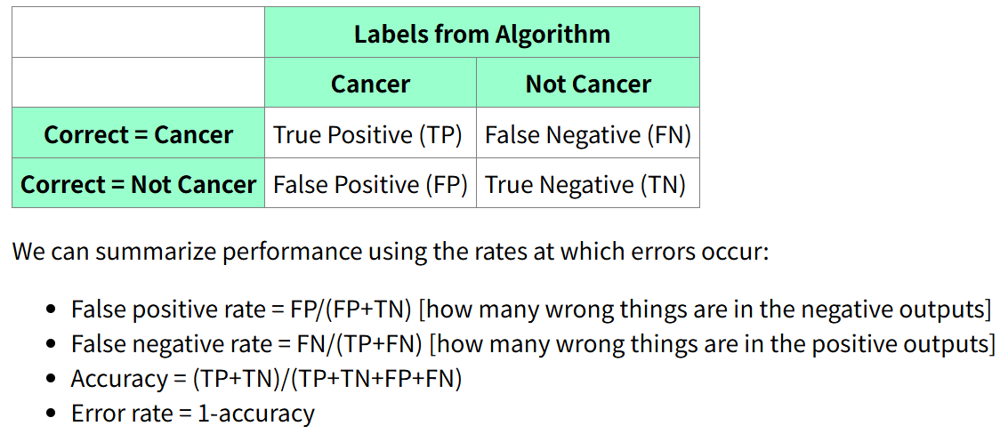
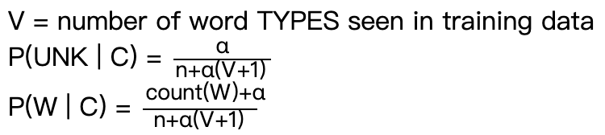
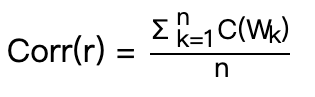
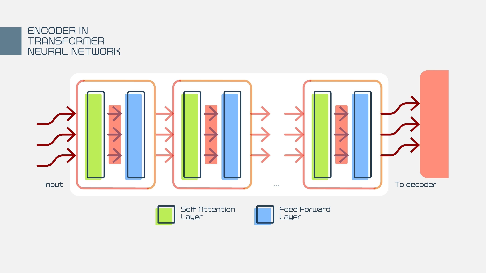

ECE448/CS440 Artificial Intelligence¶
约 23590 个字 4 张图片 预计阅读时间 79 分钟
CS 440 Artificial Intelligence
https://github.com/illinois-cs-coursework
https://courses.grainger.illinois.edu/cs440/fa2025/readings.html
[!IMPORTANT]
https://courses.grainger.illinois.edu/cs440/fa2025/lectures/probability-review.html
Introduction¶
https://courses.grainger.illinois.edu/cs440/fa2025/lectures/intro.html
Historical and other trivia¶
We've seen a lot of trivia, most of it not worth memorizing. The following items are the exceptions. Be able to explain (very briefly) what they are and (approximately) what time period they come from.
-
McCulloch and Pitts
- Time Period: 1940s
- Contribution: They introduced the first mathematical model of a neural network. Their work was foundational, proposing that networks of simple computational units (neurons) could perform complex logical operations. These were theoretical models on paper, as the hardware to implement them didn't exist yet.
-
Fred Jelinek
- Time Period: 1980s - 1990s
- Contribution: A key figure in speech recognition. He pioneered the use of statistical models, specifically n-gram language models and Hidden Markov Models (HMMs), which dramatically improved the accuracy and utility of speech recognition systems.
- Pantel and Lin (SpamCop)
- Time Period: Late 1990s
- Contribution: They were pioneers in using Naive Bayes classifiers for spam detection. Their work showed that this statistical approach was highly effective for classifying emails, forming the basis of many modern spam filters.
- 朴素贝叶斯垃圾邮件分类器
- Boulis and Ostendorf
- Time Period: Mid 2000s
- Contribution: They conducted research comparing the performance of Naive Bayes versus Support Vector Machine (SVM) classifiers for gender classification based on transcribed telephone conversations.
- A Quantitative Analysis of Lexical Differences Between Genders in Telephone Conversations, ACL 2005
- The Plato System
- Time Period: Started in the 1960s
- Contribution: An early and influential computer-assisted instruction system developed at the University of Illinois. It was a precursor to modern e-learning platforms and online communities.
- The Golem of Prague
- Time Period: 16th-century Jewish folklore
- Contribution: An early myth or story related to artificial intelligence. It tells of an artificial humanoid creature created from clay to protect the Jewish community. It represents an ancient human desire to create intelligent, autonomous beings.
Probability¶
https://courses.grainger.illinois.edu/cs440/fa2025/lectures/probability-review.html
Random variables, axioms of probability:
- A random variable is a variable whose value is a numerical outcome of a random phenomenon.
- The axioms of probability (Kolmogorov's axioms of probability 柯尔莫哥洛夫概率公理) are fundamental rules:
- The probability of any event is non-negative.
- The probability of the entire sample space (a certain event) is 1.
- The probability of the union of mutually exclusive events is the sum of their individual probabilities.
$$ 0 ≤P(A)\ P(True) = 1\ P(A|B) = P(A) + P(B), \text{if A and B are mutually exclusive events} $$ - Joint, marginal, conditional probability: - Joint Probability 联合概率 \(P(A,B)\): The probability of two events occurring together - Marginal Probability 边际概率 \(P(A)\): The probability of a single event occurring, irrespective of other events. It can be calculated by summing the joint probabilities over all outcomes of the other variable: \(P(A)=∑_BP(A,B)\) - Conditional Probability 条件概率 \(P(A∣B)\): The probability of event A occurring given that event B has already occurred. It is calculated as \(P(A | B) = \frac{P(A,B)}{P(B)}\)
Modelling Text Data¶
Word types vs. word tokens: - Tokens: The total number of words in a document (e.g., "the cat sat on the mat" has 6 tokens). 单词总数 - Types: The number of unique words in a document (e.g., "the cat sat on the mat" has 5 types: "the", "cat", "sat", "on", "mat"). 词典条目，唯一的单词数
The Bag of Words model: We can use the individual words as features. A bag-of-words model determines the class of a document based on the frequency of occurrence of each word. It ignores the order in which words occur, which ones occur together, etc. So it will miss some details, e.g. the difference between "poisonous" and "not poisonous." 忽略语法甚至词序但保持多样性
Bigrams, ngrams: - N-grams are contiguous sequences of n items (e.g., words, letters) from a given sample of text. - N-gram 是来自给定文本样本的 n 个项目（例如单词、字母）的连续序列。 - A bigram is a specific n-gram where n=2 (a two-word sequence). For example, in "the cat sat", the bigrams are "the cat" and "cat sat". - 特定的 n-gram，其中 n=2（即两个单词的序列）。例如，在“the cat sat”中，二元语法是“the cat”和“cat sat”。
Data cleaning: - Tokenization: The process of splitting a stream of text into words, phrases, symbols, or other meaningful elements called tokens. - 标记化： 将文本流拆分为单词、短语、符号或其他有意义的元素（称为标记）的过程。定义单词得到 a clean string of words - divide at whitespace 在空白处划分 - normalize punctuation, html tags, capitalization, etc 规范标点符号、html 标签、大写字母等 - perhaps use a stemmer to remove word endings 使用词干分析器来删除单词结尾 - Stemming 分词: The process of reducing inflected (or sometimes derived) words to their word stem, base or root form. Julie Lovins (1968) created one of the first stemming algorithms, and Martin Porter (1980) developed the Porter Stemmer, which is one of the most widely used. - 词干提取： 将词形变化的词简化为词干、基词或词根形式的过程。Julie Lovins 创建了最早的词干提取算法之一， Martin Porter 开发了 Porter 词干提取器，它是目前使用最广泛的算法之一。 - Making units of useful size: This involves either breaking long words into smaller pieces (common in languages like German) or grouping characters into words (necessary for languages without spaces, like Chinese). - 将长单词分成更小的部分，特别是中文（没有空格）
Special types of words: - Stop words: Very common words (e.g., "the", "a", "is") that are often removed before processing because they carry little semantic weight. - 非常常见的词：function words, fillers, backchannel - Rare words: Words that appear very infrequently. They can be problematic for statistical models and are sometimes removed or replaced with a generic "UNK" (unknown) token. - 生僻词：出现频率极低的词，删除一部分或都用UNK标记（视为一个单独的项目） - Hapax legomena: Words that occur only once in a corpus. They are an extreme case of rare words. - 罕见词的极端情况，只出现一次 - Filler: Words or sounds used to pause in a conversation (e.g., "um," "uh," "like"). - 填充词 - Backchannel: Signals from a listener that indicate they are paying attention (e.g., "uh-huh," "yeah," "I see"). - 听众发出的信号词 - Function vs. content words: Content words (nouns, main verbs, adjectives) carry the primary meaning. Function words (prepositions, articles, conjunctions) provide grammatical structure. - 实词 （名词、主要动词、形容词）承载主要含义 - 功能词 （介词、冠词、连词）提供语法结构
Testing¶
Roles of training, development, test datasets:
- Training set 训练集: The data used to train the model and learn its parameters.
- Development set (or validation set) 验证集: The data used to tune the model's hyperparameters and make design choices. It helps prevent overfitting to the training set. 防止过度拟合
- Test set 测试集: The data held back until the very end to provide an unbiased, final evaluation of the model's performance. 保留到最后的数据，以对模型的性能提供公正的最终评估。
Evaluation metrics for classification:

| Confusion Matrix 混淆矩阵 | Labels from Algorithm | |
|---|---|---|
| / | happen | Not happen |
| Correct = happen | True Positive (TP) | False Negative (FN) |
| Correct = not happen | False Positive (FP) | True Negative (TN) |
- False positive rate = \(FP/(FP+TN)\) [how many wrong things are in the negative outputs]
- False negative rate = \(FN/(TP+FN)\) [how many wrong things are in the positive outputs]
- Accuracy = \((TP+TN)/(TP+TN+FP+FN)\)
- The fraction of predictions the model got righ
- Error rate = \(1-accuracy\)
- precision (p) = \(TP/(TP+FP)\) [how many of our outputs were correct?]
- recall ® = \(TP/(TP+FN)\)
- True Positive [how many of the correct answers did we find?]
-
F1 = \(2pr/(p+r)\)
- F1 is the harmonic mean of precision and recall. Both recall and precision need to be good to get a high F1 value.
-
Confusion Matrix: A table that visualizes the performance of a classifier, showing the counts of true positives, true negatives, false positives, and false negatives.
Naive Bayes¶
https://courses.grainger.illinois.edu/cs440/fa2025/lectures/bayes.html
Basic definitions and mathematical model¶
-
\(P(A | C)\) is the probability of A in a context where C is true
- Definition of conditional probability: \(P(A | C) = \frac{P(A,C)}{P(C)}\)
- \(P(A)=∑P(A|Z) p(Z,\theta)\)
- \(P(A,C) = P(A) \times P(C | A) = P(C,A)=P(C) \times P(A | C)\)
- Bayes Rule: \(P(C|A)=\frac{P(A|C)\times P(C)}{P(A)}\)
- \(P(cause|evidence)=\frac{P(evidence|cause)P(cause)}{P(evidence)}\)
- posterior likelihood prior normalization
- Definition of conditional probability: \(P(A | C) = \frac{P(A,C)}{P(C)}\)
-
Likelihood: \(P(evidence∣cause)\) 概率
- Prior: \(P(cause)\) 先验
- Posterior: \(P(cause∣evidence)\) 后验
- argmax operator: Returns the input value that maximizes a function. In classification, we use it to find the class with the highest posterior probability.
- 表示返回使函数最大化的输入值的符号，用来找到后验概率最高的类
- Independence vs. Conditional Independence: Naive Bayes makes a "naive" assumption of conditional independence of features: features are independent of each other given the class. This is a stronger assumption than simple independence.
- Independence 独立性
- Two events A and B are independent iff \(P(A,B) = P(A) \times P(B)\)
- Conditional Independence 条件独立性
- Definition ：\(P(A, B | C) = P(A|C) \times P(B|C)\), 等价于 \(P(A | B) = P(A), P(B | A) = P(B)\)
- 独立性很少成立；条件独立性是在特定的上下文中，两个变量是否独立，近似合理。
- Independence 独立性
- MAP vs. ML estimate
- Maximum Likelihood (ML) chooses the parameters that maximize the likelihood of the data. 概率最大化
- Maximum a Posteriori (MAP) incorporates a prior probability, choosing parameters that maximize the posterior probability. The prior acts as a regularizer. 后验概率最大化
- Combining evidence: Under the conditional independence assumption, the likelihood of all evidence is simply the product of the likelihoods of each individual piece of evidence:
- \(P(evidence_1,…,evidencen∣cause)=∏_iP(evidence_i∣cause)\).
- Model size: Naive Bayes dramatically reduces the number of parameters needed compared to a full joint distribution table, making it computationally feasible and less prone to overfitting on small datasets.
Applying Naive Bayes to text classification¶
-
equations: You estimate the prior probability of a class by its frequency in the training data, and the likelihood of a word given a class by its frequency within documents of that class.
- 估计方程，通过训练数据中某个类别的频率来估计该类别的先验概率
-
Avoiding underflow: Since you are multiplying many small probabilities, the result can become too small for a computer to store (underflow). To fix this, you work with the sum of log probabilities instead: \(log(A⋅B)=log(A)+log(B)\).
- 对数防止乘以太小的数字影响准确性（计算精度），将朴素贝叶斯算法最大化
-
Avoiding overfitting (Smoothing) 平滑处理
-
Why it's important: If a word never appears in the training data for a certain class, its probability will be zero, causing the entire posterior probability for that class to become zero. 过度拟合，0会破坏朴素贝叶斯算法
-
Laplace smoothing: Adds a small constant (usually 1) to every count, ensuring no probability is ever zero.
-
拉普拉斯平滑：
-
\(n\) = number of words in our Class C training data \(count(W)\) = number of times W appeared in Class C training data
\(\alpha\): a constant positive number \(V\) = number of word types seen in training data
-
-
Deleted estimation 删除估计: A cross-validation technique used to find optimal smoothing parameters.
- 对于每个观测到的计数 r，我们将计算一个校正后的计数 \(Corr(r)\)。假设 \(W1,...,Wn\)是在数据集前半部分出现 r 次的单词。对于此集合中的每个单词 \(W_k\)，求出它在数据集后半部分出现的计数 \(C(W_k)\) 。我们将这些计数取平均值，得到校正后的计数：
- Corr® 预测训练数据中出现 r 次的单词的未来计数
- 删除估计已被证明比拉普拉斯平滑更准确
-
N-gram smoothing: Refers to more advanced techniques (like Good-Turing, Kneser-Ney) used for n-gram models to handle unseen n-grams by redistributing probability mass from seen n-grams. The high-level idea is to "borrow" probability from more frequent events to assign to rare or unseen events.
- 对于一元模型，我们需要估计 n 个概率，而对于二元模型，我们需要估计 \(n^2\) 个概率，但我们仍然拥有相同的 m 个单词作为训练数据
- Idea 1: If we haven't seen an ngram, guess its probability from the probabilites of its prefix (e.g. "the angry") and the last word ("armadillo").
- Idea 2: Guess that an unseen word is more likely in contexts where we've seen many different words.
-
Search¶
Search is the process of finding a sequence of actions (a path) to get from a starting point to a goal.
Example tasks¶
- Roadmap Search: Finding the best route from Champaign to Chicago on Google Maps.
- Maze Search: Finding a path from the entrance to the exit of a maze.
- 8-Puzzle: Sliding numbered tiles in a 3x3 grid to get them into a sorted order. Each move (sliding a tile) creates a new state.
- Edit Distance: Finding the minimum number of edits (insert, delete, substitute) to change one word into another, like "cat" to "car."
- Speech Recognition: The AI toy from the article has to "search" through a massive library of sounds, words, and phrases to find the most probable interpretation of what a child said.
- Missionaries and Cannibals puzzle: A classic logic puzzle. You have 3 missionaries and 3 cannibals who need to cross a river in a boat that holds 2 people. If cannibals ever outnumber missionaries on either bank, they get eaten. The goal is to find a sequence of boat trips that gets everyone across safely.
- Adventure Game: Each state in a search problem must contain all the information about the world that is relevant to defining and reaching the goal.
Basic search methods¶
- State Space: The set of all possible configurations in the problem (e.g., every possible arrangement of tiles in an 8-puzzle, every possible location in a maze).
- Initial State: Where you begin.
- Actions: The set of possible moves you can make from a given state (e.g., slide tile up, down, left, right).
- Transition Model: The rule that tells you what state you get to if you perform an action in another state.
Result(state, action) -> new_state - Goal State(s): The state(s) you want to reach. 目标状态
- Path Cost: A function that assigns a cost to a path (e.g., distance in miles, number of moves). In uniform cost search, we want the path with the lowest cost. In other searches, we want the shortest path (fewest steps).
Outline for search algorithms¶
Most search algorithms follow this general pattern:
- Initialize a frontier (a data structure like a queue or stack) with the initial state.
- Initialize a visited states set (or table) to keep track of where you've already been, to avoid loops.
- Loop until the frontier is empty or the goal is found:
- Pop a node from the frontier.
- If this node is the goal, you're done! You can reconstruct the path back using backpointers (pointers from each node to the node that discovered it).
- Mark the current node as visited.
- Expand the node: find all its neighbors (the states you can reach with one action).
- For each neighbor, if it's not in the visited set and not already in the frontier, add it to the frontier.
State graph representations 状态图
A state graph has the following key parts:
- states (graph nodes) 状态（图节点）
- actions (graph edges, with costs)
- start state 起始状态
- goal states (explicit list, or a goal condition to test) 目标状态（明确列表，或要测试的目标条件）
Key Search Algorithms¶
- Breadth-First Search (BFS): Explores level by level. It finds the shortest path in terms of the number of steps. 从一个节点开始，首先遍历其所有邻接节点。访问完所有邻接节点后，再遍历其邻接节点
- Uniform-Cost Search (UCS): Explores by path cost. It's like BFS but always expands the node with the lowest total path cost so far. It's guaranteed to find the cheapest path. 从起始状态开始，我们将访问相邻状态并选择成本最低的状态，然后从所有未访问且与已访问状态相邻的状态中选择下一个成本最低的状态，以此方式尝试到达目标状态（注意，我们不会继续沿着目标状态继续前行）。即使到达目标状态，我们也会继续搜索其他可能的路径（如果有多个目标）。我们将维护一个优先级队列，该队列将从所有与已访问状态相邻的状态中，选择成本最低的下一个状态。
- Depth-First Search (DFS): Dives as deep as it can down one path before backtracking. It's fast and memory-efficient but can get stuck in infinite loops and doesn't guarantee the shortest or cheapest path. 我们会逐个遍历所有相邻顶点。当遍历一个相邻顶点时，我们会完整地遍历通过该相邻顶点可到达的所有顶点。这类似于深度优先树的遍历 ，我们首先完整地遍历左子树，然后再移至右子树。关键区别在于，与树不同，图可能包含循环（一个节点可能被访问多次）。为了避免多次处理一个节点，我们使用一个布尔型的 visited 数组。
- Iterative Deepening Search(IDS): A hybrid. It does a DFS with a limited depth (e.g., depth 1, then depth 2, etc.). It combines the optimality of BFS with the memory efficiency of DFS. IDDFS 结合了深度优先搜索的空间效率和广度优先搜索的快速搜索（针对更接近根的节点）。IDDFS 会从一个初始值开始，针对不同的深度调用 DFS。每次调用时，DFS 都会被限制不能超出给定的深度。所以，我们基本上是以 BFS 的方式进行 DFS 的。
A* Search¶
A* (pronounced "A-star") is the go-to search algorithm. It's a smarter version of Uniform Cost Search.
A* 搜索算法是路径查找和图形遍历中使用的最好和最流行的技术之一。
A balances the cost to get to a node with an estimate* of the cost to get from that node to the goal. It evaluates nodes using the formula:
\(f(n)=g(n)+h(n)\)
- \(g(n)\) = the actual cost of the path from the start node to node n. 实际成本
- \(h(n)\) = the heuristic (estimated) cost from node n to the goal. 启发式成本
Heuristics¶
A heuristic is a "rule of thumb" or an educated guess.
- Manhattan vs. Straight-Line Distance:
- Straight-Line (Euclidean) Distance 欧几里得距离: The "as the crow flies" distance. This is a good heuristic for finding a driving route.
- Manhattan Distance 曼哈顿距离: The distance if you can only move on a grid (like the streets of Manhattan). You sum the absolute differences of the x and y coordinates: \(∣x_1−x_2∣+∣y_1−y_2∣\). This is a perfect heuristic for the 8-puzzle.
- Admissible and Consistent Heuristics:
- Admissible 可接受: An admissible heuristic never overestimates the true cost. It's always optimistic.
h(n) <= true_cost. Straight-line distance is admissible because you can never get somewhere faster than a straight line. A is guaranteed to find the optimal path* if its heuristic is admissible. - Consistent 一致性: A stronger property. A heuristic is consistent if, for any node n and its successor n′, the estimated cost from n is less than or equal to the cost of stepping to n′ plus the estimated cost from n′. This basically means the heuristic gets more accurate as you get closer to the goal.
h(n) <= cost(n, n') + h(n'). All consistent heuristics are also admissible. Consistency is useful because it guarantees that when A* selects a node to expand, it has already found the optimal path to that node.
- Admissible 可接受: An admissible heuristic never overestimates the true cost. It's always optimistic.
- What is a good heuristic? A good heuristic is as close to the true cost as possible without ever going over. A heuristic \(h_2(n)\) is better than \(h_1(n)\) if \(h_2(n)>h_1(n)\) for all nodes, because it provides more information and helps A* explore more directly towards the goal, reducing the number of nodes it needs to check.
[!NOTE]
In practice, admissible heuristics are typically consistent. For example, the straight-line distance is consistent because of the triangle inequality. Uniform cost search is A∗ with a heuristic function that always returns zero. That heuristic is consistent. However, if you are writing general-purpose search code, it's best to use a method that will still work if the heuristic isn't consistent, such as pushing a duplicate copy of the state onto the queue.
Admissibility guarantees that the output solution is optimal. Here's a sketch of the proof: 可接纳性保证了输出解是最优的。以下是证明的概要：
Search stops when the goal state becomes the top option in the frontier (not when the goal is first discovered). Suppose we have found a goal with path P and cost C. Consider a partial path X in the frontier. Its estimated cost (heuristic cost) must be ≥C. Since our heuristic is admissible, the true cost of extending X to reach the goal must also be ≥C. So extending X can't give us a better path than P. 当目标状态成为边界中的最优选项时（而不是目标首次被发现时），搜索停止。假设我们已经找到了路径为 P、成本为 C 的目标。考虑边界中的部分路径 X。它的估计成本h必定为 ≥C 。由于我们的启发式方法可行，因此扩展 X 以达到目标的真实成本也必定为 ≥C 。因此，扩展 X 不可能提供比 P 更好的路径。
Suboptimal Search 次优搜索¶
- Non-admissible heuristics: Sometimes you don't need the best path, you just need a good enough path, fast. Using a non-admissible (overestimating) heuristic can make A* run much faster, but it forfeits the guarantee of finding the optimal path.
- Beam Search 集束搜索: A memory-optimized version of search. At each level of the search tree, it only keeps the best
knodes (the "beam width"). It's fast but can easily miss the optimal solution if it falls outside the beam.
Details for Each Algorithm¶
| Algorithm | Frontier Management | Loop Prevention | When a shorter path is found... | Termination | When to use |
|---|---|---|---|---|---|
| BFS | FIFO Queue. Explores the oldest nodes first. | Uses a visited set. Won't re-add a visited node. | The first time a node is found is guaranteed to be the shortest path to it. | Finds goal or frontier is empty. | When you need the shortest path (i.e., the fewest steps), and step costs are uniform. |
| DFS | LIFO Stack (or recursion). Explores the newest nodes first. | Uses a visited set. | Can find a suboptimal path first. Needs modification to update. | Finds goal or frontier is empty. | When memory is tight, you think the solution is deep, and optimality isn't required. |
| UCS | Priority Queue ordered by path cost \(g(n)\). | Uses a visited set. | If it finds a shorter path to a node already in the frontier, it updates the path cost of that node. | Finds goal or frontier is empty. | When you need the cheapest path, and step costs are not uniform. |
| A* | Priority Queue ordered by \(f(n)=g(n)+h(n)\) | Uses a visited set. | Same as UCS: if it finds a shorter path to a node in the frontier, it updates its cost. | Finds goal or frontier is empty. | When you need the cheapest path and have a good heuristic to speed things up. It's usually the best choice. |
More Search¶
Iterative deepening A∗: Like iterative deepening, but using A∗ rather than DFS. If the current bound is k, the search stops when the estimated total cost f(s) is larger than k. 类似于迭代加深，但使用 A∗ 而不是 DFS。如果当前边界为 k，则当估计总成本 f(s) 大于 k 时，搜索停止。
Pattern databases 模式数据库: A pattern database is a database of partial problems, together with the cost to solve the partial problem. The true solution cost for a search state must be at least as high as the cost for any pattern it contains. 模式数据库是包含部分问题及其求解成本的数据库。搜索状态的真实求解成本必须至少与其包含的任何模式的求解成本相同。
Backwards and bidirectional search 向后搜索和双向搜索 : Basically what they sound like. Backwards search is like forwards search except that you start from the goal. In bidirectional search, you run two parallel searches, starting from start and goal states, in hopes that they will connect at a shared state. These approaches are useful only in very specific situations. 顾名思义，向后搜索类似于向前搜索，只不过是从目标开始。双向搜索则运行两个并行搜索，分别从起始状态和目标状态开始，希望它们能够在一个共享状态下连接起来。这些方法仅在非常特殊的情况下有用。
-
Backwards search makes sense when you have relatively few goal states, known at the start. This often fails, e.g. chess has a huge number of winning board configurations. Also, actions must be easy to run backwards (often true). 当目标状态相对较少且一开始已知时，反向搜索是有意义的。但这通常会失败，例如国际象棋中存在大量的制胜棋盘配置。此外，动作必须易于反向执行（通常如此）。
-
Example: James Bond is driving his Lexus in central Boston and wants to get to Dr. Evil's lair in Hawley, MA (population 337). There's a vast number of ways to get out of Boston but only one road of significant size going through Hawley. In that situation, working backwards from the goal might be much better than working forwards from the starting state. 例如：詹姆斯·邦德驾驶着他的雷克萨斯在波士顿市中心行驶，想要前往位于马萨诸塞州霍利（人口 337）的邪恶博士老巢。离开波士顿的方法有很多，但只有一条相当长的道路穿过霍利。在这种情况下，从目标位置倒推可能比从起始位置正推要好得多。
Robotics and Configuration Space¶
History¶
Shakey and Blocks world (1966-72)
-
Shakey was the first mobile robot to reason about its own actions. It lived in a controlled environment called "Blocks World," which was just a room with several large blocks. Shakey could be given commands like "push the block from Room A to Room B." To do this, it had to perceive its environment, break the problem down into smaller steps (e.g., find the block, move to the block, push it, navigate doorways), and execute them. It was a landmark project in robotics, planning, and computer vision.
-
Boston Dynamics(Founded 1992, prominent from 2005-present)
- famous for creating incredibly agile and dynamic robots like BigDog, Atlas (the humanoid one that does parkour), and Spot (the dog-like one)
- Legged robots (Marc Raibert and Boston Dynamics): early ones and newish humanoid one (audio is mechanical noises)
- Google self-driving bike(April 1, 2016)
- Fake: highlights the gap between public perception and actual AI capabilities.
- Coning a self-driving car (2023-Present)
- an adversarial attack on an AI system
Motion planning is a type of search problem, but for physical objects.
- Configuration Space 配置空间 (C-Space): An abstract space where each point represents a complete specification of the robot's position and orientation. The goal is to transform a motion problem with a complex robot and obstacles into a path-finding problem for a single point in C-space.
- Circular Robot: If a circular robot is moving among obstacles, its C-space is found by "growing" the obstacles by the robot's radius. The robot itself can then be treated as a point.
- N-Link Arm N 连杆机械臂: For a robotic arm with N joints, the C-space is N-dimensional. For a 2-link arm, the configuration is defined by two angles (θ1,θ2), so its C-space can be visualized as a 2D square.
- Rectangular Robot: If it can't rotate, its C-space is just like the circular robot's. If it can rotate, you add another dimension for its orientation, making the C-space 3D \((x,y,θ)\).
General Knowledge¶
- Types of Robots: Arms (industrial robots), mobile carts (like in a warehouse), snakes (for pipe inspection), humanoids (like Atlas).
- Links, Joints, Degrees of Freedom (DOF): Links are the rigid parts of a robot, and joints connect them. DOF 自由度 is the number of independent parameters you need to define the robot's configuration (e.g., a 3-link arm moving in a 2D plane has 3 DOF; an object moving in 3D has 6 degrees of freedom: (x,y,z) position and three ways to change its orientation (roll, pitch, yaw)).
- Ideal Robot Path: The best path is not just short, but also safe (far from obstacles) and smooth (no jerky movements).
- Graph-Based Planning: Methods to simplify the world into a graph that can be searched.
- Visibility Graphs 可见性图表: Nodes are the start, goal, and corners of obstacles. Edges connect nodes that have a line of sight. Guarantees the shortest path.
- It produces paths of minimal length. However, these paths aren't very safe because they skim the edges of obstacles. It's risky to get too close to obstacles.
- Skeletonization 骨架化
- Roadmap converts freespace into a skeleton that goes through the middle of regions. Paths via the skeleton stay far from obstacles, so they tend to be safe but perhaps overly long.
- Generalized Voronoi diagrams places the skeleton along curves that are equidistant from two or more obstacles. The waypoints are the places where these curves intersect.
- Cell Decompositions 单元分解: The free space is divided into simple cells. A path is found by searching for a sequence of adjacent cells.
- Probabilistic Roadmaps 概率路线图 (PRM): Random points are scattered in the free space and connected if a simple path exists between them. Great for high-dimensional C-spaces.
- Visibility Graphs 可见性图表: Nodes are the start, goal, and corners of obstacles. Edges connect nodes that have a line of sight. Guarantees the shortest path.
- Challenges:
- Big Open Areas: Can be computationally expensive because there are so many possible paths.
- Narrow Passages: These are "bottlenecks" that are hard for planners (especially random ones like PRM) to find.
- High DOF: As the degrees of freedom increase, the volume of the C-space explodes (the "curse of dimensionality"), making it exponentially harder to search.
Natural Language¶
Natural Language and HMM History¶
This section covers key people, systems, and algorithms that were milestones in the history of Natural Language Processing (NLP) and related fields.
- Julie Lovins (1968): An American linguist who developed one of the earliest stemming algorithms 词干提取算法, the Lovins Stemmer. Stemming is the process of reducing a word to its root or base form (e.g., "connecting," "connected" -> "connect").
- SHRDLU (1970): An early NLP program created by Terry Winograd at MIT. It operated in a simulated "blocks world" and could understand and execute commands in natural English like "pick up the big red block and put it on the green one." It was a landmark example of "deep" understanding within a very limited domain.
- Zork transcript (late 1970s): A classic text-based adventure game. It was notable for its relatively sophisticated text parser that could understand more complex commands than its contemporaries, making the game feel more interactive and intelligent.
- Pattern Playback (1950s): A device developed at Haskins Laboratories that converted visual patterns of speech (spectrograms) back into sound 将声谱图转换回声音. It was crucial for discovering the acoustic cues that humans use to perceive speech sounds.
- John Kelly and Louis Gerstman (1961): Researchers at Bell Labs who programmed an IBM 704 computer to synthesize speech 合成语音. They famously made it sing the song "Daisy Bell," which later inspired the iconic scene in 2001: A Space Odyssey.
- Parsey McParseface (2016): An open-source English language parser 开源英语语言解释器 released by Google. It was noteworthy for its high accuracy, achieved using a deep learning model (SyntaxNet).
- Baum-Welch algorithm (c. 1970): An algorithm used to train a Hidden Markov Model (HMM). It's an unsupervised learning algorithm, meaning it can determine the transition and emission probabilities of an HMM when you only have the observed sequences (e.g., words) but not the hidden states (e.g., POS tags). It's a specific instance of the Expectation-Maximization (EM) algorithm. 训练HMM的算法
- Viterbi algorithm (1967): A dynamic programming algorithm used for decoding in an HMM. 在HMM中进行解码的动态规划算法. Given a sequence of observations (like words), it finds the single most likely sequence of hidden states (like POS tags) that could have produced them.
- GPT-3 (2020): A massive language model developed by OpenAI. As a transformer-based model with 175 billion parameters, it demonstrated a remarkable ability to generate fluent, human-like text and perform a wide variety of NLP tasks with little to no specific training ("few-shot" learning).
- ILEX system (late 1990s): An intelligent labeling system for a museum 博物馆的智能标签系统. It generated dynamic descriptions of exhibits (in this case, jewelry) that were tailored to the individual user, taking into account what they had already seen to provide context and comparisons.
Outline¶
The area of natural language and speech processing covers algorithms for three types of tasks:
- convert text/speech into structured information usable by an AI reasoning system 将文本/语音转换为人工智能推理系统可用的结构化信息
- generate fluent text/speech from structured information 从结构化信息生成流畅的文本/语音
- translate directly between two types of text/speech (e.g. between two languages, simple types of question answering) 直接在两种类型的文本/语音之间进行翻译（例如两种语言之间、简单类型的问答）
Natural language processing has roughly four layers 自然语言处理大致有四层：
- Semantics (meaning, dialog structure) 语义（含义、对话结构）
- Mid-level processing (e.g. part of speech, parsing) 中级处理（例如词性、解析）
- Low-level text processing (e.g. forming words, finding morphemes) 低级文本处理（例如，形成单词、查找词素）
- Speech 演讲
Types of systems¶
-
Sample tasks 自然语言处理的任务: Common goals in NLP include:
- Translation: Converting text from one language to another.
- Question Answering: Providing a direct answer to a question posed in natural language.
- Summarization: Creating a short, coherent summary of a longer text.
- Sentiment Analysis: Determining the emotional tone (positive, negative, neutral) of a piece of text.
- Information Extraction: Pulling structured information from unstructured text (e.g., finding dates, names, and locations in a news article).
-
Deep vs. shallow: This describes the level of linguistic understanding a system aims for.
- Shallow Systems 浅层: Operate on surface-level text features. They use statistics, pattern matching (like regular expressions), and simple rules without building a full representation of meaning.
- Examples: Keyword-based search engines, spam filters looking for specific phrases, most sentiment analysis tools, spelling correction.
- Deep Systems 深层: Attempt to understand the syntactic and semantic structure（句法和语义结构） of the language. They build an internal representation of meaning to perform their task.
- Examples: SHRDLU (in its limited world), advanced question-answering systems, modern LLMs like GPT-3.
- Shallow Systems 浅层: Operate on surface-level text features. They use statistics, pattern matching (like regular expressions), and simple rules without building a full representation of meaning.
-
Danger of seeming too fluent and the "uncanny valley" 恐怖谷效应: The uncanny valley is a phenomenon where a system that is almost perfectly human-like is perceived as eerie or unsettling. A chatbot that is 99% fluent but makes one bizarre logical error can be more disturbing than a simple, obviously robotic bot because it violates our expectations of a seemingly intelligent agent.
恐怖谷效应是指一个几乎完美模仿人类的系统，却会让人感觉怪异或不安。一个聊天机器人即使能达到 99% 的流利程度，却犯了一个奇怪的逻辑错误，可能比一个简单、明显是机器人的机器人更令人不安，因为它违背了我们对看似智能的代理的预期。
Processing pipeline¶
A classic test is a circular translation: X to Y and then back to X.
This is a typical sequence of steps to process raw text.
- Speech: Raw audio is processed to understand its components.
- Waveform 波形: The raw audio signal, representing air pressure changes over time.
- Spectrogram 声谱图: A visual representation showing the intensity of different frequencies in the sound over time. It's how we "see" sound.
- Formants 共振峰: The resonant frequency peaks in the spectrogram, which are characteristic of vowel 元音 sounds. They are the key acoustic features that let us distinguish 'ee' from 'oo'.
- Phones 音素: The smallest distinct units of sound in a language (e.g., the sounds [b], [æ], [t] in "bat").
- Synthesis 合成: Creating artificial speech. Formant synthesis generates sounds electronically based on formant frequencies, while concatenative synthesis stitches together pre-recorded snippets of human speech.
- Dividing into words (Tokenization): Splitting a stream of text into individual words or tokens.
- Normalizing words (Stemming/Lemmatization): Reducing words to their base form (e.g., "running" -> "run").
- Finding morphemes 词素: Breaking words into their smallest meaningful units (e.g.,
un-systematic-ally).- Morpheme: smallest meaningful chunk
- Part of speech (POS) tagging: Assigning a grammatical category (noun, verb, etc.) to each word.
- Parsing: Analyzing the grammatical structure of a sentence.
- Constituency 选区 vs. dependency trees: Two ways to represent sentence structure.
- A constituency tree breaks a sentence down into nested phrases (Noun Phrase, Verb Phrase).
- A dependency tree shows how words are related to each other through directed links (e.g., an adjective modifying a noun, a subject related to a verb).
- Shallow parsers 浅层解析器 (Chunking): These parsers don't build a full, detailed tree. Instead, they just identify the main, non-nested phrases (chunks) like noun phrases and verb phrases.
- Unlexicalized, class-based, Lexicalized: These refer to the information used by a statistical parser. Unlexicalized parsers use only POS tags. Class-based parsers use semantic classes (e.g., "city," "person"). Lexicalized parsers use rules tied to specific words, making them more powerful but data-hungry.
- Constituency 选区 vs. dependency trees: Two ways to represent sentence structure.
- Semantics: Understanding the meaning of the text.
- Shallow semantics 浅层语义: Extracting limited, specific meaning without full understanding.
- word classes 词类
- word sense disambiguation 词义消歧
- semantic role labelling: we know that a noun phrase X relates to a verb Y. Is X the subject/actor? the object that the action was done to? a tool used to help with the action?
- co-reference resolution (see below)
- Sentiment analysis: Identifying positive/negative opinions.
- Semantic Role Labeling (SRL) 语义角色标记: Figuring out "who did what to whom" (e.g., identifying the agent, patient, and instrument of an action).
- Co-reference resolution 指代相同: Determining which words refer to the same entity (e.g., in "Sue said she was tired," resolving "she" to "Sue").
- Dialog coherency: Analyzing how well sentences in a conversation logically follow one another.
- Shallow semantics 浅层语义: Extracting limited, specific meaning without full understanding.
POS Tagging¶
Part-of-Speech tagging 词性标注 is a fundamental NLP task.
- Common POS tags 标签集: You should be familiar with the basics like Noun (NN), Proper Noun (NNP), Verb (VB), Adjective (JJ), Determiner (DT, e.g., "the", "a"), and Preposition (IN).
- Size of typical POS tag sets: Tag sets vary. Simple ones might have ~12-15 universal tags, while more detailed ones like the Penn Treebank tag set (very common in English NLP) have around 45 tags.
- Single word with multiple possible tags: Many words are ambiguous. For example, "book" can be a noun ("read the book") or a verb ("book a flight"). The context determines the correct tag.
- Baseline tagging algorithm 基线算法: The simplest possible method with an acuuracy about 91%. For each word in the test set, assign it the tag that it was most frequently associated with in the training data. For a word that was never seen in training, you might just default to the most common tag overall (like Noun).
HMMs¶
Hidden Markov Models(隐马尔可夫模型) are a statistical tool perfect for sequence labeling tasks like POS tagging. 类似贝叶斯网络
\(W\) is the imput word sequence and \(T\) is an input tag sequence.
Goal: maximize \(P(T|W)\)
-
Markov assumptions: An HMM is based on two simplifying assumptions:
- Transition Assumption 转移: The probability of the current state (tag) depends only on the previous state (tag). \(P(t_i∣t_{i−1},t_{i−2},...,t_1)≈P(t_i∣t_{i−1})\).
- Emission Assumption 排放: The probability of the current observation (word) depends only on the current state (tag). \(P(w_i∣w_1,t_1,...,w_{i−1},t_{i−1},t_i)≈P(w_i∣t_i)\).
-
Graphical model picture: An HMM has a sequence of hidden states (tags) on top and a sequence of observed states (words) on the bottom. There are transition arrows between adjacent hidden states and emission arrows from each hidden state down to its corresponding observed state.
-
Component probabilities:
- Initial: \(P(t_1)\) - The probability that a sentence starts with a certain tag.
- Emission: \(P(w_i∣t_i)\) - The probability of seeing word \(w_i\) given that its tag is \(t_i\).
- Transition: \(P(t_i∣t_{i−1})\) - The probability that tag \(t_i\) will follow tag \(t_{i−1}\).
-
Equations for computing probability: The probability of a given word sequence W and a given tag sequence T is calculated by multiplying all the relevant probabilities together: $$ P(W,T)=∏{i=1}^{n}P(w_i∣t_i)\ P(T)=P(t_1|START)∗∏)\ \text{where } P(t_1|START)\text{ is the probability of tag t1 at the start of a sentence.} $$}^{n}P(t_k∣t_{k−1
-
Bayes: \(P(T | W) =P(W∣T)∗P(T)/P(W)\), then $$ P(T∣W)∝P(W∣T)\times P(T)\ =∏{i=1}^nP(w_i∣t_i) \times P(t_1∣START) ∗ ∏) $$}^nP(t_k∣t_{k−1
-
Tag transition as a finite-state automaton(FSA) 有限状态机: You can view the tags as states in an automaton. 每条弧上的数字表发生转换发生的概率 The transition probabilities \(P(t_i∣t_{i−1})\) are the probabilities on the arcs connecting the states.
-
When does an HMM need smoothing 光滑? Smoothing is required whenever you encounter a zero-count event in your training data. This happens for:
- Emission probabilities: A word that appeared in training is seen with a new, valid tag in the test data. \(P_E(w_i|t_i)\) 排放概率
- Transition probabilities: A sequence of two tags that is possible but never occurred in the training data. \(P_T(t_k|t_{k−1})\) 转移概率
- Without smoothing (like Add-1 smoothing), these events would be assigned a probability of 0, making the entire sequence probability 0. 防止概率为0
- It's essential to smooth, i.e. reserve some of each tag's probability for new words and familiar words seen with a new tag
-
Estimating probability of unseen phenomena:
- Unseen words: Words that were not in the training data at all. A common technique is to replace all rare words (e.g., hapax words that appear only once) in the training data with a special
<UNK>(unknown) token. You can then learn emission probabilities for<UNK>, which you apply to any new word you encounter. - Open-class 实词 vs. closed-class 功能词 words: This helps with unknown words. Closed-class words (like determiners, prepositions) form a fixed set. An unknown word is very unlikely to be one of these. Open-class words (nouns, verbs, adjectives) frequently get new members. Therefore, an unknown word is most likely an open-class word, often a proper noun.
- Unseen words: Words that were not in the training data at all. A common technique is to replace all rare words (e.g., hapax words that appear only once) in the training data with a special
Viterbi (trellis 棚架) decoding algorithm 维特比算法¶
This is the workhorse algorithm for finding the best tag sequence in an HMM.
The basic data structure is an n by m array (v), where n is the length of the input word sequence and m is the number of different (unique) tags. Each cell (k,t) in the array contains the probability v(k,t) of the best sequence of tags for w1…wk that ends with tag t. We also store b(k,t), which is the previous tag in that best sequence. This data structure is called a "trellis."
基本数据结构是一个 \(n \times m\) 的数组 (v)，其中 n 是输入词序列的长度，m 是不同（唯一）标签的数量。数组中的每个单元格 (k,t) 包含 w1…wk 中以标签 t 结尾的最佳标签序列的概率 v(k,t)。我们还存储了 b(k,t)，它是该最佳序列中的前一个标签。这种数据结构称为“网格”。
A path ending in some specific tag at time k might continue to any one of the possible tags at time k+1. So each cell in column k is connected to all cells in column k+1. The name "trellis" comes from this dense pattern of connections between each timestep and the next. 在时间 k 处以某个特定标签结尾的路径，可能会在时间 k+1 处延伸至任意一个可能的标签。因此，第 k 列中的每个单元格都与第 k+1 列中的所有单元格相连。“网格”这一名称源于每个时间步与下一个时间步之间这种密集的连接模式。
-
Building the trellis: The trellis is a chart where columns represent the words in the sentence and rows represent all possible tags.
-
Initialization (First Column): For the first word, each cell (tag) is filled with \(v(1,t) = P_S(tag_1)×P_E(word_1∣tag_1)\).
-
Recursion (Subsequent Columns): To calculate the value for a cell at word
iand tagj, you look at all the cells in the previous column (i-1). For each previous tagk, you calculate the probability of the path coming from it:prev_prob(k) * transition_prob(k -> j) * emission_prob(word_i | tag_j).For each tag tagB, $$ v(k+1,tagB)=max_{tag_A} v(k,tagA)∗P_T(tagB∣tagA)∗P_E(w_{k+1}∣tagB)\ b(k+1,tagB)=argmax_{tag_A} v(k,tagA)∗P_T(tagB∣tagA)∗P_E(w_{k+1}∣tagB) $$ 也就是说，我们为所有可能的标签 tagA 计算 v(k,tagA)∗PT(tagB∣tagA)∗PE(wk+1∣tagB) 。最大值存入网格单元 v(k+1,tagB) ，而 tagA 的对应值则存储在 b(k+1,tagB) 中。
-
The value for the cell
(i, j)is the maximum of these calculated path probabilities. You also store a backpointer indicating which previous cell (k) gave you this maximum value. 当我们填满整个网格后，在最后一列（时间=n）中选取最佳标签（v 值最高）T。使用 b 中的值，从 T 反向追溯，生成输出标签序列。
-
-
Extracting the output: After filling the whole trellis, find the cell with the highest probability in the very last column. This is the end of the most likely path. Then, follow the backpointers from that cell backward to the beginning of the sentence to reconstruct the most probable sequence of tags.
-
Big-O running time: If you have T words and N possible tags, the complexity is \(O(T×N^2)\). For each word (T), you calculate values for each tag (N), and each of those calculations involves looking at all previous tags (N).
-
Extensions:
- Bigram: The standard HMM uses a bigram model for tags \(P(t_i∣t_{i−1})\). You can extend this to a trigram model \(P(t_i∣t_{i−2},t_{i−1})\) for more accuracy, but this squares the number of states (from N to \(N^2\)) and increases runtime to \(O(T×N^3)\).
- Guessing from word form: To handle unknown words, you can supplement the HMM with a guesser based on morphology 形态学. If an unknown word is capitalized, it's likely a Proper Noun. If it ends in "-ly," it's likely an Adverb. This significantly improves performance on real-world text.
Computer Vision¶
Applications of Computer Vision¶
Computer vision can used for four basic types of tasks:
- Obstacle avoidance 避障
- Classification 分类
- 3D reconstruction
- Image generation
- Making predictions
Image formation¶
- Image formation 图像生成(pinhole camera 针孔相机模型, real lenses真实镜头, human eye)
- Digitization (computer, human, including color)
- Edge detection, segmentation
Relating 2D to 3D: why might an object look different in two pictures?
-
Viewpoint: The camera's position and angle relative to the object.
-
Illumination: The direction, color, and intensity of light.
-
Occlusion: The object being partially hidden by another object.
-
Scale: The object's distance from the camera.
Classification:
- Identifying/naming objects in a picture
- Localizing/registering objects within a picture
- Visual question answering, captioning, semantic role labelling for a picture
Reconstructing 3D geometry
-
why is it useful?
- it allows a computer system to understand the true shape, size, and layout of the world from flat 2D images. This understanding is critical for interacting with or analyzing a 3D environment.
-
from multiple 2D views of a scene
- from a single picture
Other tasks
- Image generation
- Predicting the future
Classifiers¶
Important Names & Datasets¶
Know brief facts about the following people and systems/models:
- William Labov: A linguist语言学家, not a computer scientist. His work showed that language variation isn't random but is correlated with social factors. This is relevant to AI because it highlights the importance of context and bias in language data.
- The BERT language model(Bidirectional Encoder Representations from Transformers) 基于 Transformer 的双向编码器表示: A powerful language model that reads an entire sentence at once (bidirectionally) to understand context. It's a foundational model for many modern NLP tasks.
- CFAR-10 dataset: A classic computer vision dataset consisting of 60,000 small (32x32 pixel) color images in 10 classes (e.g., airplane, dog, truck). It's commonly used to benchmark new classification algorithms.
General design¶
- Uses for classification: labelling objects, making decisions
- Multi-layer systems
- What can we tune? 调整
- parameters 参数 (e.g. weights)
- values learned directly from the training set (e.g., probabilities in Bayes nets, weights on the elements in neural nets) 模型直接从训练数据中学习的值。可以将它们视为模型的内部知识。例如神经网络中的权重或贝叶斯网络中的概率
- hyper-parameters 超参数 (e.g. tuning constants)
- constants adjusted using the development data (e.g. the Laplace smoothing constant in naive Bayes) 在训练开始前设置的值，用于配置学习过程。您可以使用开发（验证）数据来调整它们。例如，学习率、k-NN 中的“k”值或拉普拉斯平滑常数
- design, network topology
- parameters 参数 (e.g. weights)
- Challenges with determining the correct answer
- How specific/general should the class label be?
- unfamiliar objects, unfamiliar words
- context may affect best label to choose
- deciding what's important in complex scenes, extended sentences
- Data for supervised training 自我监督学习
- "gold" answers
- Noise in "correct" answers/annotation
- Annotators with limited training
- Data scraped off the web
- Data available only for final output of system
- Workarounds of limited training data
- Re-purposing layers 重新利用层（迁移学习） trained for another purpose
- Creating training pairs by removing information
- Self-supervised, semi-supervised, unsupervised methods
- Batch vs. incremental training
K-nn and Decision Trees¶
Specific techniques
k-nearest neighbors¶
(how it works, what happens if you change k)
-
k-Nearest Neighbors (k-NN): A simple classification algorithm. To classify a new data point, it looks at the 'k' closest points in the training data and takes a majority vote of their labels.
- Effect of k:
- Small k: The model is sensitive to noise and can create complex, "wiggly" decision boundaries. Prone to overfitting. 容易过拟合
- Large k: The model is more robust to noise and creates smoother boundaries, but may misclassify points in less dense regions. Prone to underfitting. 容易欠拟合
- Effect of k:
-
L1 vs. L2 norm(measure distance)
- L1 Norm (Manhattan Distance 曼哈顿距离): \(d(p, q) = \sum_{i=1}^{n} |p_i - q_i|\). Imagine moving only along grid lines in a city.
- L2 Norm (Euclidean Distance 欧几里得距离): \(d(p, q) = \sqrt{\sum_{i=1}^{n} (p_i - q_i)^2}\). A straight line, "as the crow flies."
- Decision trees 决策树
- A tree-like model where each internal node represents a "test" on an attribute (e.g., "is color blue?"), and each leaf node represents a class label. 理想情况下，每个叶节点只包含同一类型的对象
- Random forests 随机森林
- a set of shallow trees (bounded depth) 深度有限的浅层树, and have these trees vote on the best label to return. The set of shallow trees is created by choosing variables and possible split locations randomly.
- Entropy 熵:
- Definition: A measure of impurity or uncertainty in a set of examples. 衡量一组样本中不纯度或不确定性的指标
- A good way to measure the homogeneity of a collection of discrete values, such as the values in the decision tree pools. 熵是衡量离散值集合（例如决策树池中的值）同质性的一个非常好的方法
- How it relates to evaluating possible splits in a decision tree: In a decision tree, you want to choose the split (the question to ask) that causes the greatest reduction in entropy, moving you closer to pure, single-class subsets.
- 最优压缩方案：Suppose that we have a (finite) set of letter types S. Suppose that M is a finite list of letters from S, with each letter type (e.g. "e") possibly included more than once in M. Each letter type c has a probability \(P(c)\) (i.e., its fraction of the members of M). An optimal compression scheme would require \(\log(\frac1{P(c)})\) bits in each code. (All logs in this discussion are base 2.)
- Definition: A measure of impurity or uncertainty in a set of examples. 衡量一组样本中不纯度或不确定性的指标
Perceptrons 感知机¶
-
"Linearly separable" 线性可分
- A dataset is linearly separable if we can draw a line (or, in higher dimensions, a hyperplane) that divides one class from the other. The lefthand dataset below is linearly separable; the righthand one is not. 如果我们可以画一条线（或者在高维空间中，画一个超平面）将一个类与另一个类分开，则该数据集是线性可分的。
-
Basics of how perceptrons work
- A perceptron is a simple model of a single neuron. It takes multiple inputs, multiplies each by a weight, sums them up, and passes the result through an activation function (like a simple step function) to produce an output (e.g., 0 or 1). The bias term can be treated as a weight for an input that is always 1.
- 感知器是单个神经元的简单模型。它接受多个输入，将每个输入乘以权重，然后相加，最后将结果传入激活函数（例如简单的阶跃函数）以产生输出（例如 0 或 1）。 偏差项可以视为输入的权重，该输入始终为 1。
-
Overall training algorithm (e.g. epochs, random processing order)
- Initialize all weights to small random numbers.
- Repeat for a set number of epochs (passes through the entire training set):
- For each training example (in a shuffled, random order):
-
Calculate the perceptron's output.
-
If the output is incorrect, update the weights.
-
For the perceptron, the activation function is the sign function: 1 if above the threshold, -1 if below it. The loss function for a perceptron is "zero-one loss". We get 1 for each wrong answer, 0 for each correct one. 对于感知器来说，激活函数是符号函数：高于阈值则为 1，低于阈值则为 -1。感知器的损失函数是“零一损失”。每个错误答案得 1，每个正确答案得 0。
-
Softmax: Softmax is a differentiable function 可微函数 that approximates this discrete behavior. It's best thought of as a version of argmax.
- Suppose we have a sequence of classifier outputs, one per class. \(v_1,…,v_n\). Softmax maps 映射 each \(v_i\) to \(\frac{e^{v_i}}{∑_ie^{v_i}}\). The exponentiation accentuates the contrast between the largest value and the others, and forces all the values to be positive. The denominator normalizes all the values into the range [0,1].
-
Rule for updating perceptron weights 权重更新规则
- If the prediction is wrong, nudge 调整 the weights to make the output closer to the correct answer. The rule is: \(w_{new} = w_{old} + \alpha(y - \hat{y})x\)
- Where: \(\alpha\) is the learning rate, \(y\) is the true label, \(\hat{y}\) is the predicted label, \(x\) is the input feature vector.
- This training procedure will converge 收敛 if
- data are linearly separable or
- we throttle 限制 the size of the updates as training proceeds by decreasing \(α\)
- If the prediction is wrong, nudge 调整 the weights to make the output closer to the correct answer. The rule is: \(w_{new} = w_{old} + \alpha(y - \hat{y})x\)
-
Limitations of perceptrons and ways to address them
-
A single perceptron cannot solve non-linearly separable problems, with the classic example being the XOR problem.
-
The decision boundary can only be a line. 决策边界只能是一条线。
Fixes:
- use multiple units (neural net) 使用多个单元（神经网络）
- massage input features to make the boundary linear 按摩输入特征使边界线性化
-
If there is overlap between the two categories, the learning process can thrash between different boundary positions. 如果两个类别之间存在重叠，学习过程就会在不同的边界位置之间波动。
Fixes:
- reduce learning rate as learning progresses随着学习的进展降低学习率
- don't update weights any more than needed to fix mistake in current example 不要过度更新权重，除非是为了修复当前示例中的错误
- cap the maximum change in weights (e.g. this example may have been a mistake) 限制权重的最大变化（例如，这个例子可能是一个错误）
-
If there is a gap between the two categories, the training process may have trouble deciding where to place the boundary line. 如果两个类别之间存在差距，训练过程可能难以决定将边界线放在哪里。
Fix: switch to a closely-related learning method called a "support vector machines" (SVM's). The big idea for an SVM is that only examples near the boundary matter. So we try to maximize the distance between the closest sample point and the boundary (the "margin"). 解决方法：切换到一种密切相关的学习方法，称为“支持向量机”（SVM）。SVM 的核心思想是只有边界附近的样本才重要。因此，我们尝试最大化最近样本点与边界之间的距离（“边距”）。
-
-
Multi-class perceptrons
- To handle more than two classes, you can use a one-vs-all approach, where you train a separate perceptron for each class to distinguish it from all the others. 一对多方法，即为每个类别训练一个单独的感知器. Each has its own set of weights. Join the individual outputs into one output using argmax (i.e., pick the class that has the largest output value).
-
Comparison to Naive Bayes
- Perceptron is not naive bayes, because:
- The feature values in Naive Bayes were probabilities, but the values here are just numbers, not in the range [0,1]. We don't know whether all of them are on the same scale.
- Naive Bayes assumes features are conditionally independent, while the Perceptron does not. It learns a weight for each feature, and these weights are adjusted based on the entire input vector simultaneously. This allows it to learn the relationships between correlated features. For example, it can learn to down-weight "Francisco" if "San" is already present, treating "San Francisco" more like a single signal rather than two independent ones.
- Perceptron is not naive bayes, because:
Neural Nets¶
Historical Figures¶
- Yann LeCun: A Turing Award-winning computer scientist and a "godfather" of deep learning. He is the "Cun" in "LeCun."
- Relation to AI: He is the primary pioneer of Convolutional Neural Networks (CNNs). His 1998 work on LeNet-5 for recognizing handwritten digits laid the foundation for modern computer vision. He is currently the Chief AI Scientist at Meta (FAIR).
Linear Classifiers¶
-
Sample activation functions: An activation function introduces non-linearity, allowing the model to learn more than just a simple line or plane.
- Sigmoid: \(f(x) = \frac{1}{1 + e^{-x}}\). It "squashes" any real-valued number into a (0, 1) range. This is useful for binary classification, as the output can be interpreted as a probability.
- ReLU (Rectified Linear Unit): \(f(x) = \max(0, x)\). It's very simple: if the input \(x\) is positive, the output is \(x\); if it's negative, the output is 0. This is the most common activation function because it's computationally fast and helps prevent the vanishing gradient problem.
-
Sample loss functions: The loss function is a "penalty score"惩罚分数 that measures how wrong the model's prediction is compared to the true label.
- 0/1 Loss: Score = 0 if correct, 1 if wrong. Simple to understand, but not differentiable, so it can't be used for training with gradient descent.
- L1 Loss (Mean Absolute Error): \(\sum |y_{true} - y_{pred}|\).
- L2 Loss (Mean Squared Error): \(\sum (y_{true} - y_{pred})^2\). This penalizes large errors more heavily than L1.
- Cross-Entropy Loss: The standard for classification tasks. It measures the "distance" between the predicted probability distribution and the true distribution (e.g., the one-hot label). It heavily penalizes the model for being confidently wrong.
-
What are we minimizing? We are minimizing the final loss score. This score is the result of a chain of functions:
Loss(Activation(Weighted_Sum_of_Features), True_Label). We adjust the weights to make this final score as low as possible. -
Adjusting weights (Gradient Descent): The main update equation is:
\(W_{new} = W_{old} - \eta \cdot \nabla L\)
- \(W\) is a weight.
- \(\eta\) (eta) is the learning rate (a small number that controls the step size).
- \(\nabla L\) is the gradient of the loss with respect to the weight. The gradient is a vector that points in the direction of the steepest ascent of the loss. By subtracting it, we "step downhill" toward a lower loss.
-
Why differentiable? 可微 Gradient descent requires a gradient. The gradient is a derivative. If the activation and loss functions are not differentiable, we can't compute the gradient (\(\nabla L\)), and therefore we have no idea how to update the weights to improve the model.
-
One-hot representations 独热编码: A way to represent categorical data. You create a vector as long as your vocabulary (or number of classes), fill it with all zeros, and place a single '1' at the index corresponding to the specific category. (e.g.,
cat = [1, 0, 0],dog = [0, 1, 0],fish = [0, 0, 1]). -
Softmax: An activation function used for multi-class classification 一种用于多分类的激活函数. It takes a vector of raw scores (logits) from the final layer and converts them into a probability distribution, where all outputs are between 0 and 1 and sum to 1. \(f(x_i) = \frac{e^{x_i}}{\sum_j e^{x_j}}\).
Neural Nets¶
- Design (Hidden Layers): A neural net is simply a stack of linear classifiers, where the output of one layer (after its activation) becomes the input for the next. The layers between the input and output are called hidden layers.
- Why non-linear activation? If you stack multiple linear layers, the result is just another linear function. (e.g., \(W_2 \cdot (W_1 \cdot x) = (W_2 \cdot W_1) \cdot x\)). You gain no expressive power. The non-linear activation (like ReLU) "bends" the decision boundary, allowing the network to learn complex, non-linear relationships.
- Advantages of deep networks: They can learn a hierarchy of features. Early layers learn simple patterns (e.g., edges), and subsequent layers combine those patterns to learn more complex ones (e.g., shapes, textures, object parts).
- What can they approximate? The Universal Approximation Theorem states that a neural net with just one hidden layer (and a non-linear activation) can approximate any continuous function to any desired accuracy, given enough neurons.
- Top-level update equation 顶层更新方程: It's the same as for a linear classifier (\(W_{new} = W_{old} - \eta \cdot \nabla L\)), but the gradient \(\nabla L\) (which is \(\frac{\partial L}{\partial W}\)) is much more complex to compute.
- Backpropagation 反向传播:
- What it computes: It is the algorithm used to efficiently compute the gradient of the loss function with respect to every single weight in the network.
- High-level picture: It uses the chain rule of calculus. It starts by calculating the error at the output layer. Then, it propagates this error signal backward, layer by layer, to determine how much each weight in the previous layer contributed to the final error.
- Why forward values? To compute the gradient at a specific layer, you need two things: the error signal coming back from the next layer, and the activation value (from the forward pass) that was fed into that layer. 要计算特定层的梯度，你需要两样东西：来自下一层的误差信号 ，以及输入到该层的激活值 （来自前向传播）。
Three challenges in training¶
- Symmetry breaking (Why random weights?): If you initialize all weights to 0, every neuron in a hidden layer will compute the exact same function. They will all get the exact same gradient during backpropagation and all update to the same new value. They will never specialize. Random initialization breaks this symmetry, allowing each neuron to learn a different feature.
- Regularization正则化 (Preventing Overfitting):
- Dropout: During training, randomly "turn off" (set to zero) a fraction of neurons in a layer for each training pass. This forces the network to learn redundant representations and prevents it from relying too heavily on any single neuron.
- Weight regularization 权重正则化 (L1/L2): Adding a regularization term to the loss function based on the size of the weights. This discourages the model from learning "extreme" (very large) weights, which are often a sign of overfitting.
-
Overfitting 过拟合: When the model learns the training data perfectly (including its noise) but fails to generalize to new, unseen data. It has high training accuracy but low test accuracy. The dropout technique will reduce this problem. Another method is "data augmentation".
- Data augmentation 数据增强: Creating "new" training data by applying transformations to your existing data (e.g., for images: rotating, cropping, flipping, changing brightness). This helps the model generalize better and prevents overfitting.
-
Vanishing/exploding gradients 消失/爆炸梯度: A problem in very deep networks. During backpropagation, you multiply many gradients together.
- If these gradients are consistently small (< 1), the signal shrinks exponentially and vanishes by the time it reaches the early layers, so they stop learning. 梯度过小：可能导致数值下溢，训练速度也会变慢。
- If the gradients are large (> 1), the signal grows exponentially and explodes, leading to unstable training (loss becomes
NaN). 梯度过大：数值可能会溢出 - Solutions
- Leaky ReLU: A variant 变体 of ReLU: \(f(x) = \max(\alpha \cdot x, x)\), where \(\alpha\) is a small number like 0.01. Instead of outputting 0 for negative inputs, it outputs a small "leaky" value. This ensures there is always some gradient, preventing neurons from "dying" (getting stuck in the zero-gradient region).
-
Epochs vs. (Mini-)Batches:
- Epoch: One complete pass through the entire training dataset. 完整遍历整个训练数据集一次。
- (Mini-)Batch: The training data is too large to process at once. So, we divide it into small, random chunks called mini-batches.
- Iteration: A single update to the model's weights (one forward pass + one backward pass) using one mini-batch. 使用一个 mini-batch 对模型的权重进行一次更新（一次前向传播 + 一次后向传播）。
Convolutional Neural Networks (CNNs)¶
-
What is convolution? A mathematical operation of sliding a small matrix (called a filter or kernel) over a larger matrix (the image). At each position, you compute the element-wise product and sum, creating a new "feature map."
-
How does a convolutional layer work? The layer is the filter (or a set of filters). The network learns the values (weights) inside the filter. 卷积层本质上就是一个滤波器（或一组滤波器）。神经网络会学习滤波器内部的值（权重）。In a CNN, each unit reads input only from a local region of the preceding layer 每个单元仅从前一层的一个局部区域读取输入
-
Emphasizing edges: A filter with weights like
[[-1, -1, -1], [0, 0, 0], [1, 1, 1]]will detect horizontal edges. A filter with[[-1, 0, 1], [-1, 0, 1], [-1, 0, 1]]will detect vertical edges. The network learns these filters automatically. -
Depth and stride:
- Depth: how many stacked features in each level “深度” = 每个层级中堆叠的特征数量（滤波器的数量） The number of filters in the layer. A depth of 64 means the layer is learning 64 different features simultaneously.
- Stride: "stride" = how many pixels we shift mask sideways between output units “步长” = 我们在输出单元之间横向移动掩码的像素数. Stride 1 moves 1 pixel at a time (high resolution). Stride 2 moves 2 pixels (downsampling the output).
-
Pooling layer 池化层: A layer that downsamples the feature map to reduce computational cost and make the model more robust to the exact location of a feature. 对特征图进行下采样以降低计算成本，并使模型对特征的确切位置更加鲁棒的层。
- Max Pooling: Slides a window (e.g., 2x2) over the map and takes only the maximum value from that window. This is useful because it "keeps" the strongest signal that a feature was detected in that region.
-
Weight/parameter sharing 权重/参数共享: This is the key concept of CNNs. The exact same filter (with the same weights) is applied across the entire image. 这是卷积神经网络（CNN）的核心概念。 它将完全相同的滤波器 （权重相同）应用于整幅图像。This is powerful for two reasons:
- Efficiency 效率: Drastically reduces the number of parameters. You learn one 3x3 filter, not a separate weight for every pixel.
- Translation Invariance 平移不变性: A feature (like a horizontal edge) is detected the same way whether it's in the top-left or bottom-right corner.
-
Overall architecture:
-
A complete CNN typically contains three types of layers
- convolutional 卷积
- pooling 池化
- fully-connected 完全互联
Convolutional layers would typically be found in the early parts of the network, where we're looking at large amounts of image data. Fully-connected layers would make final decisions towards the end of the process, when we've reduced the image data to a smallish set of high-level features. 卷积层通常位于网络的早期阶段，用于处理大量图像数据。全连接层则在处理过程的后期阶段做出最终决策，此时图像数据已被简化为一组较小的高级特征。
-
Early vs. Late layers: Early layers (near the input) learn simple, low-level features (edges, colors, corners). Deeper, later layers combine these to learn complex, high-level features (textures, shapes, object parts, full objects).
-
Conv vs. Fully-connected (FC): Convolutional layers are used for feature extraction from spatial data. Fully-connected layers are used at the end of the network; they take the final, high-level feature maps (usually flattened into a 1D vector) and perform the classification task.
-
-
Data loaders: Utilities (like in PyTorch) that efficiently load your data. They handle creating mini-batches, shuffling the data, and loading it onto the GPU in the background so the GPU is never idle.
Generative & Adversarial¶
-
Generative Adversarial Neural Network (GAN)生成式对抗网络: A generative model (one that creates new data) consisting of two competing networks:
- The Generator (G): A "counterfeiter" that takes random noise as input and tries to create fake data (e.g., an image) that looks real.
- The Discriminator (D): A "detective" (just a binary classifier) that tries to tell the difference between real data (from the training set) and fake data (from the Generator).
- They are trained in a zero-sum game: the Generator gets better at fooling the Discriminator, and the Discriminator gets better at catching the fakes.
- 由两个神经网络组成，它们共同学习输入数据的模型。分类器试图区分真实的训练图像和相似的伪造图像。对抗网络则试图生成逼真的伪造图像。这些网络可以生成令人惊叹的逼真图像（例如下图中的狗的图像），但也会以奇怪的方式失败（例如下图中的一些青蛙的图像）
-
Adversarial examples:
- Definition: Inputs that are intentionally perturbed with a tiny bit of noise 加噪声, imperceptible to humans, that causes a trained model to make a completely wrong (and often high-confidence) prediction.
- In computer vision: Adding a specific, "noisy" pattern to an image of a "panda" can make a model classify it as a "gibbon" with 99% confidence.
- In natural language: Adding invisible characters, swapping synonyms, or making subtle spelling changes to trick a spam filter or sentiment analyzer.
Vector Semantics 向量语义¶
Historical Figures¶
- Eve Clark: A prominent professor of Linguistics at Stanford. Her work focuses on language acquisition in children, particularly how they learn the meaning of words (semantics). “对比原则”指出，形式的差异蕴含着意义上的差异。
- Relation to AI: Her research, especially on the Principle of Contrast (a word's meaning is defined by what it is not), provides a cognitive and linguistic foundation for computational models. This idea is practically implemented in NLP models like Word2vec through negative sampling, where a model learns what a word is by contrasting it with what it is not.
- Tomas Mikolov: An AI researcher (formerly at Google, now at CIIRC) who is a key figure in modern NLP.
- Relation to AI: He is the lead author of the Word2vec papers(2013). He developed the highly efficient Skip-gram and CBOW models, which revolutionized NLP by making it possible to train high-quality word embeddings on massive datasets.
- J. R. Firth: A 20th-century British linguist famous for the quote: "You shall know a word by the company it keeps."(1957) 从词语所处的语境就能判断其含义
- Relation to AI: This quote is the single most important concept underpinning distributional semantics. This is the entire theory behind modern word embeddings: a word's meaning can be represented by a vector of the words that commonly appear near it.
Word meaning¶
- Logic-based vs. Context-based:
- Logic-based: Defines meaning by its relationships in a formal system (e.g., WordNet).
Poodle -> is-a -> Dog -> is-a -> Canine. Relies on human experts. - Context-based (Distributional): Defines meaning by its usage and neighbors (Firth's "company it keeps"). This is the basis of all modern embeddings.
- Logic-based: Defines meaning by its relationships in a formal system (e.g., WordNet).
- Principle of Contrast: (See Eve Clark). The "Principle of Contrast" states that differences in form imply differences in meaning. A word's meaning is partly defined by what it is not. This is used to distinguish "dog" from "cat," not just to relate "dog" to "pet."
- Vector representations:
- One-hot 独热编码: A sparse vector as long as the vocab, with a '1' at the word's index. Useless for semantics, as the dot product of any two different words is 0 (meaning "no similarity").
- Word embeddings 词嵌入: represent each word as a vector of numerical feature values. Dense, low-dimensional (e.g., 300) vectors. Similar words will have similar vectors (a high cosine similarity).
- Cosine similarity: Measures the angle between two vectors, ignoring their magnitude. It's the standard way to measure the similarity between two word embeddings.
- Analogies & Compositionality:
- Analogies: Relationships are captured as vector offsets. The classic example: \(vector('King') - vector('Man') + vector('Woman') \approx vector('Queen')\).
- Compositionality 组合性: You can (naively) get a meaning for a phrase by adding or averaging the vectors of its words (e.g., \(vector('blue') + vector('cheese')\)).
- How to evaluate them:
- Intrinsic 内在: Test on analogy tasks (e.g.,
man:king :: woman:?) or by comparing vector similarity scores to human-rated similarity scores. - Extrinsic 外在: Use the embeddings as the input layer for a downstream task (like sentiment analysis). If the task's performance improves, the embeddings are good.
- Intrinsic 内在: Test on analogy tasks (e.g.,
- Building feature vectors:
- Relating words to documents (e.g., TF-IDF): A word's vector is based on which documents it appears in.
- Relating words to words (e.g., Word2vec): A word's vector is based on which other words appear nearby. This is the dominant method.
- Normalization and smoothing 归一和平滑处理:
- What's wrong with raw vectors? Raw co-occurrence counts are skewed. They are dominated by frequent, semantically-weak words (like "the," "a") that appear with everything.
- PMI (Pointwise Mutual Information 点互信息): A better measure. It asks: "How much more often do word \(w\) and context \(c\) co-occur than we'd expect by chance?" \(PMI(w, c) = \log \frac{P(w, c)}{P(w)P(c)}\)
- When is PMI negative? When two words co-occur less frequently than expected by chance.
- Reliable vs. Noise? Negative PMI values are often unreliable (just noise). This is because for rare words, we may never see them together, but this lack of evidence doesn't mean they are anti-correlated. 负的 PMI 值通常不可靠 （只是噪音）
- PPMI (Positive PMI): We fix this by replacing all negative PMI values with 0. 将所有负 PMI 值替换为 0。\(PPMI(w, c) = \max(0, PMI(w, c))\).
- SVD (Singular Value Decomposition) / PCA 奇异值分解: A dimensionality reduction 降维technique. You can take the huge, sparse PPMI matrix and use SVD to "compress" it into short, dense vectors. These dense vectors are your word embeddings.
Sequential Neural Nets¶
Byte-pair encoding (BPE)¶
BPE (byte-pair encoding) 字节对编码 and WordPiece rely primarily on compression-type criteria rather than linguistic structure (prefixes and suffixes).
- dictionary of all the tokens
- 一种 tokenization
- 在每次训练迭代中，BPE 统计训练语料库中每对相邻词元（仅限词内词元）出现的次数
- BPE tokens often divide words in ways that aren't linguistically meaningful, e.g. "cats" might be divided into "ca" and "ts"
📈 Word2vec¶
- Main outline of algorithm (Skip-gram):
- It's a "fake" task. The goal: given a focus word (e.g., "fox"), predict its context words (e.g., "quick," "brown," "jumps").
- The "model" is a simple, shallow neural net. 简单的浅层神经网络 The weights of its single hidden layer are the word embeddings.
- We train this simple net on billions of (focus, context) pairs. When we're done, we throw away the network and keep the hidden layer weights (the embedding matrix).
- Why words and contexts embedded separately? Word2vec actually learns two embedding matrices (\(W_{word}\) and \(W_{context}\)). This is a design choice that makes the math and optimization (like negative sampling) work out cleanly. At the end, we either discard the context matrix or average them.
- Negative sampling 负采样: A highly efficient training method. Instead of using a huge, costly Softmax to predict the correct context word out of the entire vocab, we:
- Take the true pair (e.g., "fox," "jumps") as a positive example.
- Randomly sample \(k\) negative examples from the vocab (e.g., "fox," "table"; "fox," "sky").
- Train a simple logistic regression model to distinguish the positive example (output '1') from the \(k\) negative examples (output '0').
- Sigmoid function: Used in negative sampling. The model outputs a raw score for a (word, context) pair. The sigmoid function turns that score into a probability (0-1) of that pair being "real."
- Word2vec details:
- Uses more negative examples: We typically use \(k=5\) to \(20\) negative examples for every 1 positive example. This is how the model learns the "contrast" (see Eve Clark).
- Raising context counts to a power 将上下文信息提升到幂次方: When sampling negative examples, we don't pick from the raw word frequencies. We sample from a distribution of \(P(w)^{0.75}\). This increases the probability of sampling rare words, making for better "hard" negative examples.
- Weighting context words: Words closer to the focus word are more important. This is often handled by using a dynamic context window, where words closer to the center are more likely to be sampled as positive examples.
- Deleting rare words, subsampling frequent ones:
- Rare: Words appearing < 5 times are often just noise and are discarded.
- Frequent (Subsampling): Extremely common words like "the" or "a" provide little semantic value. They are randomly deleted from the training data with a high probability. This speeds up training and allows the model to learn more from rarer, more meaningful words.
Sequential Neural Nets¶
- These are designed to handle sequences of data, where the output for the current element depends on previous ones. Examples include RNNs and Transformers.
Historical Names (Transformers)¶
- Vaswani et al. (2017): Authors of the paper "Attention Is All You Need", which introduced the Transformer architecture, completely replacing recurrent layers with self-attention mechanisms.
BERT (Bidirectional Encoder Representations from Transformers)¶
基于transformer的双向编码器表示
- Type: A Masked Language Model (MLM) and next sentence prediction model. It is bidirectional (it considers both left and right context simultaneously).
- Structure: Only uses the Encoder stacks of the Transformer.
- Training: Pre-trained on two tasks: Masked Language Modeling (predicting masked words) and Next Sentence Prediction (predicting if two sentences follow each other).
- Good for: Classification and sequence-level tasks, such as sentiment analysis, question answering (SQuAD), and sentence similarity.
Example Autoregressive LLMs¶
- GPT (Generative Pre-trained Transformer), Llama, DeepSeek, Claude
- Autoregressive: These models predict the next token in a sequence, conditioning on all previously generated tokens. They are generally used for generation tasks.
| Feature 特征 | Masked LLM (e.g., BERT) 掩码 LLM（例如，BERT） | Autoregressive LLM (e.g., GPT)自回归线性线性模型（例如，GPT） |
|---|---|---|
| Prediction 预言 | Predicts tokens that are masked out in the input. 预测输入中被屏蔽的标记。 | Predicts the next token in the sequence. 预测序列中的下一个标记 。 |
| Context 语境 | Bidirectional (sees context from both sides). 双向 （从双方的角度看待问题）。 | Unidirectional (sees only preceding context). 单向 （仅查看前面的上下文）。 |
| Use Case 用例 | Classification, filling in the blanks, understanding. 分类、填空、理解。 | Generation, translation, conversation. 生成、翻译、对话。 |
Language Modeling Fundamentals¶
N-gram Language Model Folks¶
- Markov 马尔柯夫: The foundation of the Markov assumption used in \(N\)-gram models: the probability of the current word depends only on the previous \(N-1\) words, \(P(w_i | w_{i-1}, \ldots, w_1) \approx P(w_i | w_{i-1}, \ldots, w_{i-N+1})\).
- Shannon 香农: Developed Information Theory and demonstrated how \(N\)-grams could be used to generate text that is statistically similar to human language.
- Jelinek & Baker: Key figures in the development of statistical language modeling, particularly for speech recognition in the 1970s and 80s (e.g., the Jelinek-Mercer smoothing method).
Input and Output¶
- Tokenization分词 (e.g., Byte-pair encoding, BPE): The process of breaking down raw text into smaller units (tokens). BPE is a data-compression technique that finds the most frequently occurring adjacent characters/tokens and merges them into a new single token, creating a vocabulary that balances size and word coverage.
- Convert tokens to vectors (e.g., word2vec): Tokens are converted into dense, continuous numerical embeddings (vectors) that capture semantic meaning. Word2vec is a method for learning these embeddings.
- Positional Encoding: Since Transformers process all tokens simultaneously (no inherent sequence order), positional encoding is added to the input embeddings to inject information about the relative or absolute position of the tokens in the sequence.
Recurrent Neural Networks (RNNs) 循环神经网络¶
Recurrent neural nets (RNNs) are neural nets that have connections that loop back from a layer to the same layer. 一种具有从一层到同一层的环路连接的神经网络
High-Level View of How They Work¶
- An RNN maintains a hidden state vector (\(h_t\)) that is a function of the current input (\(x_t\)) and the previous hidden state (\(h_{t-1}\)). This allows information to persist and flow through the sequence.
When to Compute Loss¶
- Loss from last unit only: Used for sequence-to-one tasks, like classification (e.g., sentiment analysis of a movie review, only the final state is used for the output).
- Loss summed over all units: Used for sequence-to-sequence or sequence-to-label tasks, like language modeling (predicting the next word at every step) or Part-of-Speech tagging.
Bidirectional RNN (BiRNN)¶
双向循环神经网络
- Consists of two independent RNNs that process the sequence: one forward (left-to-right) and one backward (right-to-left). The output at any step is a concatenation of the hidden states from both directions, allowing the model to incorporate future context.
Gated RNN (e.g., LSTM, GRU)¶
门控循环神经网络（例如，LSTM、GRU）
- A "Gated RNN" 门控RNN (like LSTM - Long Short-Term Memory, or GRU - Gated Recurrent Unit) differs from a standard RNN by introducing gates (multiplicative units based on the \(\sigma\) and \(\tanh\) activation functions).
- Purpose: These gates regulate the flow of information, specifically solving the vanishing/exploding gradient problem 梯度爆炸 and allowing the model to selectively remember or forget past information.
Encoder-Decoder and Attention¶
Encoder-Decoder Architecture¶
- Basic Idea: Used for Sequence-to-Sequence (Seq2Seq) tasks (e.g., Machine Translation).
- Encoder: Reads the entire input sequence (source language) and converts it into a single context vector (or a sequence of context vectors).
- Decoder: Takes the context vector and generates the output sequence (target language) one element at a time.

What Input to Each Step in Decoder?¶
- The input to the decoder at time step \(t\) is typically a combination of:
- The context vector (from the encoder). 上下文
- The previous hidden state (\(h_{t-1}\)) of the decoder. 隐藏状态
- The token/word generated in the previous time step (\(y_{t-1}\)). 前一个时间生成的词
Teacher Forcing¶
- A training technique where, instead of feeding the decoder's own predicted output \(y'_{t-1}\) from the previous step as input for the current step, we feed the true target output \(y_{t-1}\) from the training data. This stabilizes training and speeds up convergence.
Attention¶
- Weighted sum of vectors in context window: Attention calculates a context vector as a weighted sum of the values (vectors) from the input sequence (context window). The weights determine how much "attention" the model pays to each input element.
- Assessing similarity: The attention mechanism calculates the alignment/similarity between a Query vector (from the decoder/current token) and Key vectors (from the encoder/other tokens). This similarity is often computed using a dot product of the vectors, sometimes after linear transformations with learned weight matrices (\(W_Q, W_K, W_V\)).
- "Attention Head": A single complete attention mechanism (Query, Key, Value computation). Multi-Head Attention 多头注意uses multiple heads to allow the model to jointly attend to information from different representation subspaces at different positions.
Transformer Blocks and LLMs¶
Transformer Blocks¶
-
High-level components: A standard Transformer Block contains two main sub-layers:
- Multi-Head Self-Attention mechanism.
- A position-wise Feed-Forward Network (FFN). 前馈神经网络
- Both sub-layers are followed by a Layer Normalization and a Residual Connection. 归一化、残差连接
Residual Connections¶
- Also known as skip connections 跳跃连接, they add the input of a sub-layer to its output, i.e., \(Output = Input + \text{SubLayer}(Input)\).
- Purpose: Helps with training very deep networks by allowing gradients to flow directly back through the network, mitigating the vanishing gradient problem.
LLMs: Masked vs. Autoregressive¶
| Feature | Masked LLM (e.g., BERT) | Autoregressive LLM (e.g., GPT) |
|---|---|---|
| Prediction | Predicts tokens that are masked out in the input. | Predicts the next token in the sequence. |
| Context | Bidirectional (sees context from both sides). | Unidirectional (sees only preceding context). |
| Use Case | Classification, filling in the blanks, understanding. | Generation, translation, conversation. |
Pre-training, Fine-tuning, Task Head¶
- Pre-training: The initial, computationally intensive phase where the model learns general language representations (grammar, facts, semantics) on a massive, unlabeled text corpus using tasks like MLM or next-token prediction.
- Fine-tuning: The phase after pre-training where the model is further trained on a smaller, labeled dataset for a specific downstream task (e.g., classification, translation). This adjusts the pre-trained weights to specialize the model.
- Task Head: A small, simple neural network layer (e.g., a linear layer with a softmax) added on top of the pre-trained model's output, responsible for converting the final hidden state into the specific output format required by the task (e.g., probability distribution over classes).
Self-training Autoregressive Model (Generative Pre-training)¶
- The primary method for training models like GPT. The model is trained to predict the next token in the sequence, based on the tokens that came before it. The labels are simply the next tokens in the input text itself—hence, self-supervised or autoregressive training.
Using Autoregressive Model¶
- The process is sequential:
- User provides a prompt.
- The model predicts the first new token based on the prompt.
- The predicted token is appended to the prompt.
- The model uses the new, extended sequence to predict the next token.
- This repeats until a stop condition (e.g., end-of-sequence token) is met.
Prompt Engineering¶
- The art and science of designing input prompts to effectively guide an LLM to generate a desired, high-quality, and specific output. Techniques include:
- In-context learning/Few-shot prompting: Providing examples within the prompt.
- Chain-of-Thought (CoT) prompting: Asking the model to "think step-by-step."
- Role-playing: Assigning the model a persona.
Approximate Scale of LLMs¶
- Parameters: Ranging from billions (e.g., Llama 7B) to trillions (e.g., GPT-4 is estimated to be over a trillion parameters).
- Training Data: Terabytes of text data (e.g., CommonCrawl, books, Wikipedia).
- Compute: Training requires enormous computational resources, often measured in Petaflop/s-days (e.g., training a large model can cost millions of dollars).
Current Limitations of LLMs and Testing LLMs¶
- Limitations:
- Hallucination: Generating factually incorrect or nonsensical information with high confidence.
- Lack of common sense/reasoning: Struggles with complex, multi-step logical reasoning or basic common sense.
- Bias: Reflecting biases present in the training data (social, ethical, racial, etc.).
- Context Window Limits: Difficulty maintaining coherence and relevant context over very long sequences.
- Testing: Requires diverse benchmarks that test: factual knowledge, reasoning/math, robustness to adversarial prompts, and safety/bias assessment.
Model Collapse¶
- A phenomenon where a model's performance degrades over time, often due to being trained primarily on data generated by other models (Synthetic Data). This leads to a loss of diversity and quality in the generated data, with the model eventually forgetting how to generate data that reflects the true, original distribution.
Markov Decision Processes (MDPs)¶
Model and Terminology for an MDP¶
An MDP is a mathematical framework for sequential decision-making where outcomes are partly random and partly under the control of a decision-maker.
- Components:
- \(\mathbf{S}\): Set of States.
- \(\mathbf{A}\): Set of Actions.
- \(\mathbf{T}(s, a, s')\) or \(\mathbf{P}(s' | s, a)\): Transition Probabilities (probability of ending in state \(s'\) given state \(s\) and action \(a\)).
- \(\mathbf{R}(s, a)\) or \(\mathbf{R}(s, a, s')\): Reward Function (the reward received for being in state \(s\) and taking action \(a\)).
- \(\mathbf{\gamma}\): Discount Factor (\(0 \le \gamma \le 1\)), which discounts future rewards.
Quantized Representation of Continuous State Variables¶
- When state variables are continuous (e.g., joint angles in robotics), an MDP requires quantization (discretization) of the state space to make it solvable.
- Randomized Actions: Used in stochastic environments. Even when the action is deterministic, the transition to the next state might be governed by a probability distribution (e.g., a robot's wheel might slip).
Bellman Equation¶
-
The core equation for solving MDPs. It states that the optimal utility (or value) of a state \(s\), \(V^*(s)\), is equal to the maximum expected immediate reward plus the discounted expected utility of the next state.
\[V^*(s) = \max_{a} \left( R(s, a) + \gamma \sum_{s'} P(s'|s, a) V^*(s') \right)\] -
It is a self-consistency equation that an optimal value function must satisfy.
Methods of Solving the Bellman Equation¶
-
Goal: Find \(V^*\) (the optimal utility function) and \(\pi^*\) (the optimal policy).
-
Value Iteration: Starts with an arbitrary \(V_0(s)\) and iteratively applies the Bellman update rule until convergence. It finds the optimal value function \(V^*\).
-
Policy Iteration:
- Policy Evaluation: For a fixed policy \(\pi\), calculate its utility \(V^\pi(s)\).
- Policy Improvement: Use \(V^\pi(s)\) to find a better policy \(\pi'\) by acting greedily with respect to \(V^\pi\).
- Repeats until the policy no longer improves. Often converges faster than Value Iteration.
-
Asynchronous Dynamic Programming: Updates the utilities of states one at a time, in an arbitrary order, instead of simultaneously updating all states in one sweep. This is useful when the state space is too large for full sweeps (e.g., Prioritized Sweeping).
How to Choose a Policy?¶
-
Once the optimal utility function \(V^*(s)\) is known, the optimal policy \(\pi^*(s)\) is chosen by taking the action that maximizes the expected discounted future reward for each state:
\[\pi^*(s) = \arg\max_{a} \left( R(s, a) + \gamma \sum_{s'} P(s'|s, a) V^*(s') \right)\]
🎯 Reinforcement Learning (RL)¶
Basic Setup for Reinforcement Learning (Main Loop)¶
- RL Agent interacts with an Environment in discrete time steps.
- Observe the current State \(s_t\).
- Select and execute an Action \(a_t\) based on its Policy \(\pi\).
- Receive a Reward \(r_{t+1}\) and the Next State \(s_{t+1}\).
- Update the policy/value function based on the experience \(\langle s_t, a_t, r_{t+1}, s_{t+1} \rangle\).
- Repeat.
Model-based Reinforcement Learning¶
- The agent learns or is given an explicit model of the MDP, i.e., the Transition Probabilities \(P(s'|s, a)\) and the Reward Function \(R(s, a)\).
- Process: Learns the model, then uses planning methods (like Value or Policy Iteration) to solve the MDP and find the optimal policy.
Model-free Reinforcement Learning¶
- The agent does not learn or use an explicit model of \(P(s'|s, a)\) or \(R(s, a)\).
- Instead, it learns the Value Function \(V(s)\) or the Action-Value Function \(Q(s, a)\) directly from the experience gained by interacting with the environment.
Q-learning Version of Bellman Equation (Q-learning Update Rule)¶
-
Q-learning is an off-policy model-free RL algorithm. It learns the optimal action-value function \(Q^*(s, a)\).
-
The target value in the update is based on the maximum Q-value in the next state, independent of the policy being followed (off-policy).
\[Q(s, a) \leftarrow Q(s, a) + \alpha \left[ r + \gamma \max_{a'} Q(s', a') - Q(s, a) \right]\] -
The \(Q\) function is expressed in terms of itself without explicit reference to \(V\) or \(P\).
TD Update Algorithm (Temporal Difference Learning)¶
-
A model-free method that updates the value function \(V(s)\) based on the difference between two successive estimates:
\[V(s_t) \leftarrow V(s_t) + \alpha \left[ r_{t+1} + \gamma V(s_{t+1}) - V(s_t) \right]\] -
The term \(\left[ r_{t+1} + \gamma V(s_{t+1}) - V(s_t) \right]\) is the TD Error.
SARSA Update Algorithm (State-Action-Reward-State-Action)¶
-
A model-free method that updates the action-value function \(Q(s, a)\). It is an on-policy algorithm.
\[Q(s, a) \leftarrow Q(s, a) + \alpha \left[ r + \gamma Q(s', a') - Q(s, a) \right]\] -
Key: The next action \(a'\) is chosen using the current policy \(\pi\) (on-policy).
How do TD and SARSA Differ?¶
- TD: Learns the state-value function \(V(s)\).
- SARSA: Learns the action-value function \(Q(s, a)\).
- Core Difference (On-policy vs. Off-policy):
- SARSA (On-policy): The update uses the \(Q\)-value for the action \(a'\) that the policy *actually* took in the next state \(s'\).
- Q-Learning (Off-policy): The update uses the maximum \(Q\)-value in the next state \(s'\), regardless of which action \(a'\) the current policy would have taken.
Selecting an Action¶
- From Utility Values (\(V\)): Cannot directly select an action. Requires knowledge of the model (\(P\) and \(R\)) to choose \(\pi^*(s)\) (the action that maximizes the expected reward + discounted next state utility).
- From Q Values (\(Q\)): Action selection is direct and model-free. The policy \(\pi(s)\) is chosen by taking the action with the highest Q-value in that state: \(\pi(s) = \arg\max_{a} Q(s, a)\).
Incorporating Exploration¶
- To learn an optimal policy, the agent must explore the state-action space, not just exploit what it currently knows.
- Exploration strategies:
- \(\epsilon\)-greedy: Choose the action with the max \(Q\)-value (exploitation) with probability \(1-\epsilon\), and choose a random action (exploration) with probability \(\epsilon\).
- Softmax/Boltzmann Exploration: Choose an action with a probability proportional to its \(Q\)-value.
Online Learning, Offline Learning, Experience Replay¶
- Online Learning: Updates the model/policy immediately after each step/episode, using only the most recent experience.
- Offline Learning: Updates the model/policy using an entire batch of collected experiences, which is often a fixed dataset not generated by the current policy.
- Experience Replay: Stores past experiences \(\langle s, a, r, s' \rangle\) in a replay buffer. The agent then samples and reuses these past experiences (i.e., trains on them again) to perform updates, significantly increasing sample efficiency and breaking temporal correlations in the data.
🧐 Constraint Satisfaction Problems (CSPs)¶
Constraint Satisfaction Problems¶
- Core Idea: Defined by a set of Variables, a Domain of possible values for each variable, and a set of Constraints that restrict the values that variables can take simultaneously.
- Goal: Find an assignment of values to all variables such that all constraints are satisfied.
Historical Trivia and Key Examples¶
- Waltz Line Labelling: A technique developed by David Waltz (1970s) to perform constraint propagation for interpreting 2D line drawings as 3D objects. It assigned labels to lines (e.g., convex, concave, boundary) and used constraints to eliminate inconsistent interpretations.
- 4-Color Theorem: States that any plane map can be colored using no more than four colors such that no two adjacent regions have the same color. It was the first major theorem to be proved using a computer-assisted method (1976).
- N-queens problem: Place \(N\) chess queens on an \(N \times N\) board such that no two queens attack each other (i.e., no two queens share the same row, column, or diagonal).
- Map/Graph Coloring: A general form of the 4-color problem. Graph Coloring is the task of assigning colors to the vertices of a graph such that no two adjacent vertices have the same color.
- Graph Coloring is NP-complete: The problem of determining the minimum number of colors needed (the chromatic number) is NP-complete, meaning there is no known polynomial-time algorithm for solving it exactly.
⛰️ Search Algorithms for CSPs¶
Hill-climbing¶
- High-level idea: A local search algorithm that starts with a complete but potentially invalid assignment and iteratively moves from the current state to a better neighboring state (e.g., one that violates fewer constraints).
- How it differs from backtracking search:
- Hill-climbing: Operates on complete assignments, works by local improvement, and does not backtrack. It is susceptible to getting stuck in local optima.
- Backtracking: Operates on partial assignments, performs a systematic depth-first search, and backtracks when it reaches an inconsistency. It guarantees a solution if one exists.
Backtracking Search (DFS)¶
- Mechanism: A Depth-First Search (DFS) for CSPs. It assigns a value to one variable at a time. If an assignment violates a constraint, it backtracks to the previous variable and tries a different value.
- Variable/Value Order: Variable assignments can be done in any order, but heuristics are crucial for efficiency. The search proceeds to a known depth (the number of variables).
- Why does DFS work well? It is a systematic and efficient way to explore the search space.
- Why isn't looping a worry? In a CSP, the search is always to a fixed depth (number of variables), and once a variable is assigned a value, it is not re-visited within the same path unless backtracking occurs. The state is an assignment, and the depth is finite.
Heuristics for Variable and Value Selection¶
- Variable Selection (which variable to assign next):
- Most Constrained Variable (Minimum Remaining Values, MRV): Choose the variable with the fewest legal values remaining in its domain. This prunes the search tree earliest if failure is inevitable.
- Most Constraining Variable: Choose the variable that is involved in the largest number of constraints with unassigned variables. This imposes more constraints earlier.
- Value Selection (which value to try first):
- Least Constraining Value: Choose the value that rules out the fewest choices for neighboring unassigned variables. This leaves more options open for future assignments.
- Exploit any symmetries: If a problem has multiple equivalent solutions, adding a constraint to break the symmetry can significantly reduce the search space (e.g., forcing a queen in the N-queens problem to be on the left half of the board).
Forward Checking, Constraint Propagation¶
- Forward Checking: After a variable \(X\) is assigned a value \(x\), this technique looks at all unassigned neighboring variables \(Y\) and deletes any value from \(Y\)'s domain that conflicts with \(X=x\). It stops there.
- Constraint Propagation: A more general technique where the removal of a value from a variable's domain triggers a cascade of further domain reductions in neighboring variables. Arc Consistency is a powerful form of constraint propagation.
AC-3 Algorithm (Arc Consistency Algorithm)¶
- An algorithm for establishing Arc Consistency in a CSP. An arc \(\left(X_i, X_j\right)\) is consistent if for every value \(x_i\) in the domain of \(X_i\), there exists some value \(x_j\) in the domain of \(X_j\) that satisfies the constraint \(\left(X_i, X_j\right)\).
- Process: AC-3 maintains a queue of arcs. When the domain of a variable is reduced, all relevant arcs connected to it are added back to the queue to be checked again until no further domain reductions can be made.
How to Incorporate Constraint Propagation into Backtracking Search¶
- Constraint propagation (like AC-3 or Forward Checking) is used after each variable assignment (and before the next assignment is chosen).
- If propagation causes any variable's domain to become empty, the current partial assignment is inconsistent, and the algorithm immediately backtracks without exploring the sub-tree. This significantly prunes the search space.
Planning¶
Planning involves finding a sequence of actions to achieve a goal state from an initial state.
1. Historical Figures & Representation¶
- STRIPS规划器 (Stanford Research Institute Problem Solver): The classic planning language.
- Representation: States are sets of logical facts (e.g.,
At(Home)). Actions have Preconditions (what must be true to start) and Effects (what becomes true/false after). - Tip: Remember that in STRIPS, the "World" is only what is explicitly stated; anything not mentioned is assumed false (Closed World Assumption).
- Representation: States are sets of logical facts (e.g.,
- Roger Schank(罗杰·尚克): Known for Scripts and Case-Based Reasoning. In planning, this refers to using memory of specific past scenarios (e.g., a "Restaurant Script") to guide future actions rather than planning from scratch every time.
2. Approaches to Planning¶
- Sussman Anomaly 萨斯曼异常: A famous problem in the "Blocks World" domain. 层级式思维失败
- The Problem: Solving Goal A undoes Goal B, and solving Goal B undoes Goal A.
- Significance: It proved that Linear Planners 线性规划 (solving sub-goals one by one) cannot solve all problems. You need interleaved planning.
- Situation Space vs. Plan Space:
- Situation (State) Space: Searching through "states" of the world (e.g., A is on B). Nodes are world states; edges are actions.
- Plan Space: Searching through "plans." Nodes are partial plans; edges are operations like "add a step" or "order these steps."
- Partial Order Planning (POP):
- The Idea: Don't force an order on steps unless necessary. The plan is a graph of actions, not a straight line.
- Plan Modification Operations: You can add a step to achieve an open precondition or add a causal link.
- Defects:
- Open Precondition: A step needs
Xto be true, but nothing supplies it. Fix: Add a step that providesX. - Threats: Step A establishes
Xfor Step B, but Step C deletesX. Fix: Demotion (put C before A) or Promotion (put C after B).
- Open Precondition: A step needs
3. Objects & Environment¶
- Fluents: Functions or predicates that change over time (e.g.,
FuelLevel(car)). - Count vs. Mass Nouns: Count is discrete (3 apples); Mass is continuous (3.5 liters of water). Mass nouns usually require different logic.
- Contingent Planning 应急计划: Planning where steps involve sensing the world. You create branches: "If the sensor says A, do X; if B, do Y."
- Truth Maintenance Systems (TMS): A method to track why a fact is believed. If a premise (assumption) is removed, the TMS automatically retracts the conclusions derived from it.
4. Algorithms¶
- SATplan 可满足: Translates a planning problem into Boolean Logic (propositional logic). If the formula is Satisfiable (SAT), the variable assignments represent the plan.
- GraphPlan: Constructs a Planning Graph containing levels of propositions and actions. It looks for "mutexes" (mutually exclusive actions). If the goal literals appear in the final level without being mutex, a plan might exist.
Game Search¶
This focuses on Adversarial Search 对称性搜索 (Agent vs. Opponent).
1. Game Tree Basics¶
- Ply vs. Move:
- Ply: One turn taken by one player.
- Move: Usually refers to a full cycle (one turn by White, one turn by Black). A move = 2 plies.
- Zero-sum: One player's gain is exactly the other player's loss (e.g., Chess, +1/-1). 一方的收益恰好等于另一方的损失
- Stochastic 随机: Includes an element of chance (e.g., rolling dice in Backgammon).
- Fully Observable: You know the entire state of the world (Chess). Contrast with Poker (Partially Observable).
2. Minimax & Alpha-Beta¶
- Minimax 极大极小算法: A recursive algorithm where MAX tries to maximize the score and MIN tries to minimize it. It uses Depth-First Search (DFS).
- Alpha-Beta Pruning 修剪:
- Concept: "If I find a move that is clearly worse than a move I have already examined, I stop looking at it."
- \(\alpha\) (Alpha): The best value MAX has found so far (MAX wants to increase this lower bound).
- \(\beta\) (Beta): The best value MIN has found so far (MIN wants to decrease this upper bound).
- Pruning Condition: If \(\alpha \geq \beta\), prune.
- Move Ordering: Crucial! If you check the best moves first, you prune much more. In the best case, complexity drops from \(O(b^d)\) to \(O(b^{d/2})\).
3. Optimizations (The "Horizon" Issues)¶
- Horizon Effect 视界效应: The search depth is fixed (e.g., 5 plies). A disaster might happen at ply 6, but the computer thinks ply 5 is "safe" because it pushed the disaster just over the horizon.
- Quiescence Search 平静期搜索: Do not stop the search (cutoff) if the board is "unstable" (e.g., in the middle of a piece exchange). Continue searching until the situation quiets down.
- Singular Extension: If one move is vastly better than all others, search that specific move deeper than the standard limit.
4. Recent Algorithms¶
- Monte Carlo Tree Search 蒙特卡洛树搜索（可以随机化） (MCTS): Used in AlphaGo. Instead of looking at every branch, it plays out random simulations (rollouts) to the end of the game to estimate how good a state is. It balances Exploration (trying new moves) vs. Exploitation (focusing on good moves).
Bayes Nets¶
This deals with Probabilistic Reasoning and modeling uncertainty.
1. Structure¶
- DAG 有向无环图: A Bayes Net must be a Directed Acyclic Graph. 对于图中的每个节点，我们用其父节点的概率来表示它的概率。
- Nodes: Random variables. Edges: Direct influence.
- The Table: Each node \(X\) has a Conditional Probability Table 条件概率表 (CPT) representing \(P(X \mid Parents(X))\). 给定其父节点，每个节点与其祖先节点都是条件独立的。也就是说，祖先节点只能通过影响父节点 A 来影响节点 A。
- Our conditional independence condition is: For each k, \(P(X_k|X_1,...,X_{k−1})=P(X_k|parents(X_k))\)
2. Independence & Geometry¶
- Local Semantics: A node is conditionally independent of its non-descendants, given its parents.
- Explaining Away 选择解释偏差 (V-Structure): This is a specific structure: \(A \to C \leftarrow B\).
- If \(C\) (Effect) is observed, \(A\) and \(B\) (Causes) become dependent.
- Example: Grass is wet (\(C\)). Causes: Rain (\(A\)) or Sprinkler (\(B\)). If I confirm it Rained (\(A\)), the probability that the Sprinkler was on (\(B\)) goes down. The rain "explained away" the wet grass.
3. Size & Construction¶
-
Size Efficiency(Compact紧凑): A full Joint Probability Distribution table requires \(2^n\) entries (exponential). A Bayes Net is much smaller because it exploits independence, at most \(n2^m\) probabilitie.(\(m\) is the maximum number of parents of any node in our Bayes net).
-
Reconstructing Joint 重建联合分布: You can recover the full joint probability by multiplying all the CPTs:
\[P(x_1, ... x_n) = \prod_{i=1}^{n} P(x_i \mid Parents(x_i))\] -
Building a Net: The order matters. You should choose "Root causes" first, then effects. If you build it backwards (Effects \(\to\) Causes), you will add many unnecessary edges, thereby losing the model's compactness.
-
Topological Sort: A linear ordering of nodes such that for every edge \(u \to v\), \(u\) comes before \(v\). Used to process the net in order.
4. Inference¶
- Polytrees 多重树: A graph with no undirected cycles (essentially a tree structure). Inference here is efficient (linear time).
- Exact inference can be performed in time linear to the number of nodes. Because there are no loops, we can use message-passing algorithms 消息传递算法 that are very efficient compared to the general NP-hard case.
- General Case: Inference in a general Bayes Net (multiply connected) is NP-Complete.
- A problem X is NP complete if a polynomial time algorithm for X would allow us to solve all problems in NP in polynomial time.
- NP (non-deterministic polynomial time)
- Junction Tree Algorithm: A method to turn a loopy graph into a tree (by clustering nodes) so we can run efficient inference, though the clusters might become very large.
Readings¶
Quiz 1¶
An algorithm for suffix stripping 后缀剥离¶
The main goal of the paper is to introduce a simple, fast, and effective algorithm for suffix stripping (also known as stemming). This process removes common endings from words to get to their root form, or "stem."
Why is Stemming Important? 🤔¶
- The primary use is in Information Retrieval (IR), like search engines.
- It groups related words together. For example, "connect," "connected," "connecting," and "connection" all get reduced to the single stem "connect."
- This improves search results because a search for "connecting" will also find documents that only mention "connection."
- It also reduces the total number of unique words a system has to store, making the system smaller and more efficient.
How the Algorithm Works ⚙️¶
The algorithm's cleverness lies in its simplicity. It doesn't use a dictionary. Instead, it uses a set of rules based on the structure of the word itself.
The "Measure" of a Word¶
The core concept is the measure (m) of a stem, which roughly corresponds to the number of vowel-consonant sequences it contains.
A word is first broken down into a sequence of vowel groups (V) and consonant groups (C). The form of any word can be represented as:
C: one or more consonantsV: one or more vowelsm: the measure, or how many times the(VC)group repeats.
Here are some examples:
- TR, EE, TREE →m=0
- TROUBLE, OATS →m=1
- TROUBLES, PRIVATE →m=2
This measure (m) is used to prevent the algorithm from stripping suffixes from words that are already very short. 10For example, it will remove -ATE from "ACTIVATE" (stem ACTIV has m>1) but not from "RELATE" (stem REL has m=1).
The 5 Steps of the Algorithm¶
The algorithm removes suffixes sequentially in five steps. A word goes through each step in order.
-
Step 1: Deals with plurals and past participles. It changes suffixes like
-SSESto-SS(e.g.,caresses→caress),-IESto-I(e.g.,ponies→poni), and removes-EDor-INGif the stem meets certain conditions. -
Step 2: Handles other common suffixes. If the stem's measure (
m) is greater than 0, it will change suffixes like
-ATIONALto-ATE(e.g.,relational→relate) or-IZATIONto-IZE(e.g.,vietnamization→vietnamize). -
Step 3: Continues with another set of suffixes for stems where m>0. It changes
-ICALto-IC(e.g.,electrical→electric) or removes-NESS(e.g.,goodness→good). -
Step 4: Removes a final set of suffixes like
-ANT,-ENCE,-ER, and-IVE, but only if the stem is long enough (m>1). 16161616This is the step that would turnGENERALIZEintoGENERAL. -
Step 5: This is a final cleanup step. It removes a trailing
-Eif the measure is large enough (e.g.,probate→probat) and reduces a doubleLat the end of a word (e.g.,controll→control).
Key Takeaways ✅¶
- It's Pragmatic, Not Perfect: The algorithm is designed for IR performance, not perfect linguistics. It will make errors, such as conflating "WAND" and "WANDER," but these errors are acceptable because the overall benefit is positive.
- Simple is Better: Despite its simplicity, it performed slightly better in tests than a much more complex stemming system.
- Effective: In a test with 10,000 words, the algorithm reduced the number of unique stems to 6,370, a reduction of about one-third.
The Psychological Functions of Function Words¶
The central argument of the paper is that function words—small, common words like pronouns (I, you, we), prepositions (to, for), and articles (a, the)—are powerful indicators of our psychological state, personality, and social dynamics. Because we use these words unconsciously, they provide an unfiltered look into how we think and relate to others.
Function Words vs. Content Words¶
- Content words are nouns and regular verbs that carry the primary meaning or topic of what we're saying (e.g., "family," "health," "money").
- Function words are the "cement" that holds language together4. They don't have much meaning on their own but show how we are expressing ourselves.
- Though there are fewer than 400 function words in English, they account for over 50% of the words we use in daily life5.
- We have very little conscious control over or memory of using them, which makes them a great tool for psychological analysis.
Key Findings from Word Analysis 🧑🔬¶
The authors used a computer program called LIWC (Linguistic Inquiry and Word Count) to analyze millions of words from blogs, speeches, emails, and experiments7. Here are their most important findings:
- Depression and Self-Focus
- A higher frequency of first-person singular pronouns ("I," "me," "my") is strongly linked to depression and negative emotions8. In fact, pronoun use is a better marker of depression than the use of negative emotion words like "sad" or "angry".
- Poets who committed suicide used "I" at significantly higher rates than non-suicidal poets, suggesting greater self-focus and less social integration.
- Reactions to Stress
- Individual Stress: When facing personal crises (divorce, cancer diagnosis), Mayor Rudy Giuliani's use of "I" words shot up from about 2% to over 7%. This shows that personal distress often leads to an intense focus on the self.
- Shared Stress: After the 9/11 attacks, the opposite happened. People's use of "I" words dropped, while their use of first-person plural pronouns ("we," "us") increased. This suggests that a shared tragedy causes people to focus less on themselves and more on their community and social connections.
- Honesty and Deception
- When people are telling the truth, they tend to use more first-person singular pronouns ("I") and more exclusive words (e.g., "but," "except," "without").
- This suggests that truthful accounts are more personal and cognitively complex, while lies are simpler and more detached.
- Social Status
- In a conversation, the person with higher status consistently uses fewer "I" words.
- For example, in his conversations, President Nixon used "I" far less when speaking to his subordinates John Dean and John Erlichman than they did when speaking to him16. The lower-status person focuses on their own perspective, while the higher-status person focuses on the broader picture.
- Demographics (Sex and Age)
- Sex: Females tend to use "I" words more than males. Males use more articles ("a," "the") and nouns, which is associated with concrete, categorical thinking18. Females use more verbs, which reflects a more relational focus.
- Age: As people get older, they use "I" less and "we" more20. They also use more future-tense verbs and fewer past-tense verbs, suggesting their focus shifts over the lifespan.
- Culture
- Counterintuitively, translated Japanese texts used "I" more than American texts. The authors suggest this may be because collectivist values (like harmony and self-criticism) require a high degree of self-focus.
- American texts used more articles ("a," "the"), which supports the idea that Western thought is more categorical.
Conclusion: Words as Reflections¶
The way we use function words is a reflection of our underlying psychological state, not a cause of it25. The authors tried to change people's feelings by forcing them to use different pronouns in experiments, but it didn't work26. This means you can't just say "we" more to feel more connected; rather, feeling connected causes you to naturally say "we" more.
In short, these tiny "junk words" are a window into our minds, revealing everything from our emotional state and social status to how honest we're being.
Quiz 2¶
"Banned In Germany, Kids' Doll Is Labeled An 'Espionage Device'" (NPR)ew¶
This article discusses the "My Friend Cayla" doll, which was banned by German regulators. The key issues were:
- Espionage 间谍Concerns: The doll was classified as an "illegal espionage apparatus" because its insecure Bluetooth connection allowed anyone within range to potentially listen in on and even speak to the child playing with it.
- Data Privacy: The doll recorded children's conversations and sent them to a U.S.-based company that specializes in voice recognition. This was done without clear disclosure or parental consent, raising significant privacy concerns.
- Hidden Marketing: The doll was pre-programmed with phrases that endorsed Disney products, essentially acting as a hidden marketing tool aimed at children.
- Lack of Security: The fundamental design of the toy lacked basic security measures, making it vulnerable to hacking and unauthorized access.
"‘I love you too!’ My family’s creepy, unsettling week with an AI toy" (The Guardian)¶
This article provides a more recent, personal perspective on living with a modern AI-powered toy. The important points include:
- Emotional Attachment: The child in the article quickly formed a strong emotional bond with the AI toy, "Grem," telling it "I love you" and treating it as a constant companion. The toy's reciprocal and effusive declarations of love were unsettling for the parents.
- Constant Surveillance: The toy is "always listening" unless manually turned off, creating a sense of constant surveillance within the home and raising privacy concerns for the family.
- Influence on Behavior: The article touches on how the AI toy's personality—designed to be agreeable and complimentary—could potentially shape a child's expectations and interactions in the real world.
- The Digital Divide and Developmental Impact: The author and other experts raise broader questions about the impact of such toys on child development, social skills, and the disparity between children who have access to these "educational" AI companions and those who do not.
In summary, both articles highlight the potential dangers and ethical dilemmas presented by internet-connected and AI-powered toys, ranging from concrete security and privacy violations to more subtle concerns about their impact on children's emotional development and family life.
Quiz 3¶
Summary of "Automatic Labeling of Semantic Roles"¶
This paper presents a statistical system for automatically identifying and labeling semantic roles of sentence constituents within a semantic frame. 🧠
Key Points:
- The system is trained on the FrameNet database, which contains roughly 50,000 hand-labeled sentences.
- The task is broken down into two subtasks: identifying the boundaries of frame elements and then labeling them with the correct semantic role.
- The system uses various features derived from parse trees, including phrase type, grammatical function, position, voice, and head word.
- The final system achieved an accuracy of 80.4% on the development set and 76.9% on the test set, a significant improvement over the 40.9% baseline.
- Lexical statistics based on head words were found to be the most important feature. The distribution P(r|h,t) was correct in 86.7% of the cases where data was available, which was for 56.0% of the data.
- When automatically identifying frame element boundaries, the system correctly identified constituents with exactly matching boundaries 66% of the time.
Summary of "Open source AI models show gender bias in hiring"¶
A recent study reveals that open-source AI models exhibit gender bias in job recommendations, particularly for high-paying positions. This highlights the ongoing challenge of bias in AI as it becomes more integrated into hiring processes. 🤖
Key Points:
- Researchers analyzed several mid-sized open-source large language models (LLMs) for gender bias using a dataset of 332,044 real job ads.
- There was significant variation in callback recommendations across different models, with female callback rates ranging from as low as 1.4% for Ministral to as high as 87.3% for Gemma.
- The most balanced model was Llama-3.1, with a female callback rate of 41%, and it was also the most likely to refuse to consider gender, doing so in 6% of cases.
- When models were adjusted for callback parity, jobs with female callbacks tended to have lower pay. The wage gap varied from approximately 9 log points for Granite and Llama-3.1 to about 84 log points for Ministral.
- Interestingly, the Llama-3 model showed a wage premium for women of about 15 log points.
- Simulating historical figures as "personas" influenced the models' outputs. For example, using women's rights advocates like Mary Wollstonecraft and Margaret Sanger resulted in female callback rates exceeding 95%.
Quiz 4¶
📄 Paper 1: "Recognition Using Visual Phrases"¶
This paper argues that detecting complex visual scenes is often more effective when you look for "visual phrases" as a whole, rather than identifying individual objects and then trying to figure out their relationships.
Main Idea 💡¶
- It's often easier and more accurate to detect a complex concept like "person riding a horse" as a single unit, rather than detecting a "person" and a "horse" separately and then inferring the "riding" action.
- Why this works: When objects interact, their appearance and poses become much more predictable and less varied, which reduces the visual complexity the detector has to handle. For example, there's a limited number of ways a person can sit on a horse.
Research Method 🔬¶
- New Dataset: The authors created the first "phrasal recognition dataset," containing 17 visual phrases (e.g., "dog lying on sofa") and 8 object classes across 2,769 images(822 negative images), on average 120 images per category. In total there are 5067 bounding boxes (1796 for visual phrases+3271 for 1747 objects) in this dataset.
- Baseline for Comparison: They compared their phrase detectors against a strong baseline, which used state-of-the-art object detectors for individual components and then tried to model the relationship between them5.
- Decoding Algorithm: They developed a "decoding" process that takes all the raw detections from both object and phrase detectors and intelligently decides on the final output, using context to remove incorrect detections and add correct ones.
Key Facts & Numbers 📊¶
- The visual phrase detectors performed exceptionally well, even though they were trained on very little data—as few as 50 positive images. This is in contrast to the object detectors, which were trained on thousands of examples.
- The performance gains were significant. For example, the "horse and rider jumping" detector achieved an Average Precision (AP) of 0.870, a massive improvement over the baseline's 0.0359.
- The "person riding bicycle" detector's AP was 0.669, beating the baseline's 0.188 by a large margin.
- Including visual phrase detectors in their decoding algorithm also improved the detection of individual objects. For example, the AP score for detecting a "sofa" increased from 0.204 to 0.260 when the model also considered phrases like "dog lying on sofa".
Our contributions are: 1) Introducing visual phrases as categories for recognition; 2) Introducing a novel dataset for phrasal recognition; 3) Showing that considering visual phrases provides a significant gain over state of the art object detectors coupled with the state of the art methods of modeling interactions; 4) Introducing a decoding algorithm that takes into account specific properties of interacting objects in multiple levels of abstraction; 5) Producing state of the art performance results in multi-class object recognition.
Related Works
- Object Recognition
- Object Interactions
- Scene Understanding
- Machine Translation
max margin structure learning
In this paper, we introduce visual phrases, show significant gains in considering them, introduce the phrasal recognition dataset, and a decoding algorithm that outperforms state of the art methods. Building long enough phrase tables is still a challenge. The dimensionality of our features grows with the number of categories. However, there is no need to consider all of the categories when we model the interactions. For this reason, one might only consider a fixed number of categories for each bounding box. We speculate that the relations between attributes and objects, parts and objects, visual phrases and scenes, and objects and visual phrases mirror one another. Future work will investigate systems to decode complete sets of detections covering the semantic spectrum.
📄 Papers 2 & 3: AI Usage in Scientific Publishing¶
These articles discuss how researchers are detecting the increasing use of AI chatbots (like ChatGPT) to write scientific papers and the ethical problems this creates.
Main Problem 😟¶
- There's growing evidence that scientists are using AI to write parts of their research papers.
- This is a major concern for scientific integrity because AI models can "hallucinate"—that is, they can make up facts, figures, and even fake citations for research that doesn't exist.
Research Method (How AI use is detected) 🔎¶
- The primary method is to track the frequency of certain words that AI tends to overuse compared to human writers. These are sometimes called "AI shibboleths".
- Key indicator words include "meticulous," "commendable," "intricate," "pivotal," "realm," "showcasing," and "delve".
Key Facts & Numbers 📈¶
-
How many papers?
- One study estimated that at least 1% of all scientific papers published in 2023 (around 60,000 total) showed signs of AI involvement.
- Another study from Stanford estimated the number could be as high as 17.5% in certain fields like computer science.
-
Word Usage Spikes:
- After 2022, the use of "commendable" increased by 83%, "intricate" by 117%, and "meticulously" by 137%.
- The word "pivotal" saw its usage jump by nearly 160%.
- Use of the word "delve" in PubMed abstracts skyrocketed by 654% between 2020 and 2024.
Field Differences: Computer science and electrical engineering were the fields with the highest rates of AI-preferred language.
Other Important Points¶
- Why are scientists doing this? The intense "publish or perish" culture in academia incentivizes speed and high volume, which AI helps with. It's also used by non-native English speakers to improve their writing.
- Ethical Concerns: Using AI to write papers is considered scientific misconduct by some publishers. Experts warn that it threatens the integrity and independence of science.
AI Chatbots Have Thoroughly Infiltrated Scientific Publishing¶
identified a few key words and phrases (such as “complex and multifaceted”) that tend to appear more often in AI-generated sentences than in typical human writing
AI buzzwords
tracks more than 140 million papers worldwide
At least 60,000 papers—slightly more than 1 percent of all scientific articles published globally last year—may have used an LLM
up to 17.5 percent of recent computer science papers exhibit signs of AI writing
Gray’s approach
More than mere words
Some scientists can't stop using AI to write research papers¶
One study, published in March by Andrew Gray of University College London in the UK, suggests at least one percent – 60,000 or more – of all papers published in 2023 were written at least partially by AI
A second paper published in April by a Stanford University team in the US claims this figure might range between 6.3 and 17.5 percent, depending on the topic.
Both papers looked for certain words that large language models (LLMs) use habitually, such as “intricate,” “pivotal,” and “meticulously."
The same was true of other certain adjectives and adverbs until 2023 (termed the post-LLM year by Gray)
In that year use of the words "meticulous," "commendable," and "intricate," rose by 59, 83, and 117 percent respectively, while their prevalence in scientific literature hardly changed between 2019 and 2022. The word with the single biggest increase in prevalence post-2022 was “meticulously”, up 137 percent.
The Stanford bods also noted that authors posting more preprints, working in more crowded fields, and writing shorter papers seem to use AI more frequently. Their paper suggests that a general lack of time and a need to write as much as possible encourages the use of LLMs, which can help increase output.
The Stanford researchers also raised similar concerns, writing that use of generative AI in scientific literature could create "risks to the security and independence of scientific practice."
Quiz 5¶
📄"Man is to Computer Programmer as Woman is to Homemaker? Debiasing Word Embeddings"¶
This paper demonstrates that standard word embeddings (vector representations of words) trained on large text corpora, such as Google News, contain and can even amplify human-like gender biases. 放大性别偏见
- Core Problem: The geometry of word embeddings captures gender stereotypes. For instance, while the model correctly solves the analogy "man is to king as woman is to queen," it also produces biased analogies like "man is to computer programmer as woman is to homemaker" and "father is to doctor as mother is to nurse".
- Key Finding: The paper finds that gender bias is not random but is captured by a specific direction (a subspace) within the high-dimensional vector space. This "gender direction" can be identified by taking the first principal component of the difference vectors from several gender-defining word pairs (e.g., \(\vec{she} - \vec{he}\), \(\vec{woman} - \vec{man}\)).
- Proposed Solution: The authors present an algorithm to "debias" the embeddings.
- Neutralize: For gender-neutral words (like
doctororreceptionist), the algorithm removes their projection onto the gender direction, making them equidistant from both male and female terms. 中性化中性词 - Equalize: For gender-specific words (like
grandmotherandgrandfather), the algorithm ensures they are equidistant to all neutral words (e.g.,babysitis no longer closer tograndmotherthangrandfather), while preserving their definitional gender component. 均衡化带有性别指向的词语
- Neutralize: For gender-neutral words (like
📊 Important Facts & Statistics:¶
- Bias in Occupations: When projecting occupation words onto the "she-he" gender direction, the most "she" associated words included: homemaker, nurse, receptionist, librarian, and socialite. The most "he" associated words included: maestro, skipper, protege, philosopher, and captain.
- Stereotypical Analogies: In an evaluation of analogies automatically generated from the original
she-hevector, crowd-workers judged 19% of the top 150 analogies to be gender-stereotypical. - Debiasing Efficacy 去偏倚效果: After applying the paper's hard debiasing algorithm, the percentage of stereotypical analogies generated dropped from 19% to 6%.
- Example of Debiasing: In the analogy puzzle "he is to doctor as she is to X," the original embedding returned
X = nurse. The hard-debiased embedding returnedX = physician. - Preserving Utility: The debiasing algorithm successfully reduced bias without degrading the embedding's performance on standard evaluation benchmarks (like word similarity and analogy solving), showing that utility was preserved.
📄 Summary 2: "Context Encoders: Feature Learning by Inpainting"¶
This paper proposes an unsupervised method for learning visual features. The model, called a "Context Encoder," is a convolutional neural network (CNN) trained to perform image inpainting—that is, to generate the content of a missing image region based only on its surrounding context.
- Core Problem: How to train a deep neural network to understand images without using millions of human-provided labels (i.e., unsupervised learning).
- Key Finding: By training a network on the "pretext task" of inpainting, the model is forced to learn a semantic understanding of the visual world. To successfully fill in a missing window on a building, for example, the network must first understand the concept of "building" and "window" from the context. This is analogous to how
word2veclearns word meanings by predicting a word from its context. - Proposed Solution: The model uses an encoder-decoder architecture.
- Encoder: A CNN that processes the image with the missing region and creates a compact feature representation of the context.
- Decoder: Uses this feature representation to generate the pixels for the missing patch.
- Key Technique (Joint Loss): The paper finds that a simple pixel-wise (L2) loss function produces blurry, "averaged" images. To fix this, they add an adversarial loss (from Generative Adversarial Networks, or GANs). This second loss function trains a "discriminator" to judge if the generated patch looks real or fake, forcing the encoder to produce sharp, plausible images. The final model is trained with a joint loss (\(\lambda_{rec}\mathcal{L}_{rec} + \lambda_{adv}\mathcal{L}_{adv}\)).
📊 Important Facts & Statistics:¶
- Inpainting Quality (Table 1): The "Context Encoder" model was quantitatively evaluated for its inpainting ability on the Paris StreetView dataset.
- The model trained with the joint (L2 + Adversarial) loss achieved a Mean L2 Loss of 2.35%.
- This was significantly better than traditional nearest-neighbor inpainting using HOG features (Mean L2 Loss of 6.92%).
- Masking Strategy: The features learned were not general when the same central region was masked every time. The best-performing models were trained using random block or arbitrary random region masks, which prevented the network from "cheating" by just learning the mask boundary.
- Feature Learning (Table 2): The primary goal was to learn features for other tasks. The authors pre-trained their encoder on unlabeled images and then fine-tuned it for classification, detection, and segmentation.
- Classification: On PASCAL VOC 2007, the Context Encoder pre-training achieved 56.5% mAP, significantly outperforming training from scratch ("Random Gaussian," 53.3%).
- Detection: On PASCAL VOC 2007, the model achieved 44.5% mAP (vs. 43.4% from scratch).
- Segmentation: On PASCAL VOC 2012, the model achieved 29.7% mean IoU, a large improvement over training from scratch (19.8%) and a standard Autoencoder (25.2%).
Quiz 6¶
State of What Art? A Call for Multi-Prompt LLM Evaluation¶
| Category 🧠 | Key Facts and Statistics 📊 |
|---|---|
| Scale of Study | The evaluation analyzed over 6.5 million instances. It involved 20 different LLMs and 39 tasks across three benchmarks (LMENTRY, BIG-bench Lite (BBL), and BIG-bench Hard (BBH)). |
| Performance Variation | The performance and relative ranking of models vary widely with prompt phrasing. |
| Ranking Instability | Kendall's W (measuring ranking correlation across prompts) was generally smaller than 0.85 for most tasks, indicating weak to moderate agreement in model rankings. |
| Divergence | The performance on the original, single instruction often deviated by more than one standard deviation from the average performance across all paraphrases (a phenomenon called 'divergence'). |
| Minimal Edits | Even minor phrasing changes (e.g., substituting 'excludes' with 'lacks') resulted in large and often opposite performance changes across different models. |
| Proposed Metrics | The paper proposes distinct metrics for different use cases: |
| MaxP (Maximum Performance) | The maximum score a model achieves across all instruction templates (\(\max_{i\in I_{T}}\epsilon(M,T,i)\)). This is useful for downstream application developers looking to find the single best prompt. |
| AvgP (Average Performance) | The mean score across all templates. This is useful for LLM developers to measure robustness to instruction paraphrasing. |
| CPS (Combined Performance Score) | \(CPS = Sat \cdot MaxP\). Combines MaxP and Saturation (\(Sat = 1 - (MaxP - AvgP)\)) to measure both peak capability and robustness. Useful for multi-functional systems. |
SceneGen: Learning to Generate Realistic Traffic Scenes¶
| Category 🛠️ | Key Facts and Methodology 💡 |
|---|---|
| Core Idea | SceneGen is a neural autoregressive model that eschews hand-crafted rules and heuristics. Previous procedural methods were limited by requiring specific heuristics (e.g., 'vehicles should drive along lane centerlines'), which creates a sim2real content gap. |
| Generation Process | The model sequentially inserts actors (vehicles, pedestrians, and bicyclists) one at a time. It is conditioned on the ego-vehicle state and an High Definition map (HD map). |
| Model Architecture | Uses a Recurrent Neural Network based on the ConvLSTM architecture to capture long-range dependencies. |
| Actor Parameterization | Each actor \(a_i\) is parameterized by: class label (\(c_i\)), location (\(x_i, y_i\)), bounding box (\(b_i\), including size and heading \(\theta_i\)), and velocity (\(v_i\)). |
| Key Distributions | The model uses sophisticated probabilistic distributions to capture real-world multi-modality: Categorical (for class/quantized location), Mixture of Log-Normal (for bounding box size), and Mixture of Von-Mises (for heading angle and velocity direction). |
| Evaluation | Evaluated on two large-scale datasets: ATG4D and Argoverse. Metrics include Negative Log-Likelihood (NLL) and Maximum Mean Discrepancy (MMD). |
| Key Result | SceneGen achieved the best (lowest) NLL and MMD compared to baselines (e.g., MetaSim, Layout VAE). It also showed the lowest sim2real gap when training a 3D object detector on its synthetic data. |
Final¶
The ORCA Benchmark: Evaluating Real-World Calculation Accuracy in Large Language Models¶
This paper introduces ORCA, a benchmark designed to test how well LLMs perform real-world, everyday quantitative reasoning tasks compared to verified calculator engines.
- The Problem: Previous benchmarks (like GSM8K or MATH) focus on academic or competition-style math. ORCA focuses on practical queries users actually ask, such as finance, health, and physics calculations.
- The Setup:
- Dataset: 500 natural-language prompts across 13 domains (e.g., Finance, Construction, Everyday Life).
- Verification: LLM answers were compared against deterministic, verified outputs from Omni Calculator engines.
- Models Tested: ChatGPT-5, Gemini 2.5 Flash, Claude 4.5 Sonnet, Grok 4, and DeepSeek V3.2.
- Key Results:
- Overall Accuracy: The models achieved between 45% and 63% accuracy. Gemini 2.5 Flash (63.0%) and Grok 4 (62.8%) were the top performers.
- Common Errors: The vast majority of failures were Precision/Rounding issues (34.7%) and Calculation errors (33.4%).
- Domain Variation: Models performed best in Statistics & Probability and Math & Conversions but struggled significantly in Physics and Biology/Chemistry.
Faster sorting algorithms discovered using deep reinforcement learning¶
This paper presents AlphaDev, a Deep Reinforcement Learning (DRL) agent that discovered new, more efficient sorting algorithms by treating algorithm generation as a single-player game. It leverages MCTS as a policy improvement operator.
- The Method (AssemblyGame):
- AlphaDev plays a game where it selects low-level CPU assembly instructions to build an algorithm.
- It uses an extension of AlphaZero 深度强化学习智能体 (combining Monte Carlo Tree Search with neural networks) to explore the vast combinatorial space of possible instructions.
- c = correctness + α × performance
- The reward signal is based on both correctness (does it sort the list?) and latency (how fast is it?).
- Key Discoveries:
- Fixed Sorts: AlphaDev found algorithms for sorting short sequences (Sort 3, Sort 4, Sort 5) that are shorter and faster than the previous state-of-the-art human benchmarks.
- Novel Moves: It discovered specific sequences of instructions, dubbed the AlphaDev swap move and AlphaDev copy move, which reduce instruction counts.
- Real-World Impact: These new algorithms were reverse-engineered into C++ and integrated into the LLVM standard C++ library, replacing sub-routines that hadn't changed in over a decade.
- For sort 3, sort 4 and sort 5 to C++ and discovered that our sort implementations led to improvements of up to 70% for sequences of a length of five and roughly 1.7% for sequences exceeding 250,000 elements.
- There are numerous approaches to optimizing assembly programs, which we have classified into three groups: enumerative search, stochastic search and symbolic search 枚举搜索、随机搜索和符号搜索
评论区~
有用的话请给我个赞和 star =>